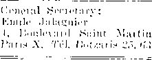
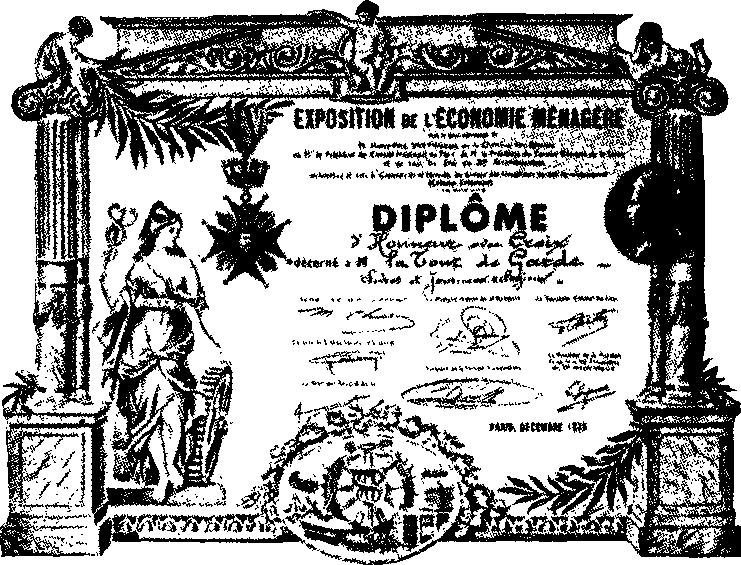

iiiiiiiiiiiiiiiiiiiiiiiiiiiiiiiiiiiiiiiiiiiiiiiiiiiiiiiiiiiiiiiiiiiiiiiiiiiiiiii
in this issue
iiiimiiimiiiimiiiiiiiimiiiiifiiiiiiiiiimmiiiimiiiiiiiiimiiiimi
every other WEDNESDAY
five cents a copy one dollar a year Canada & Foreign 1.25
Vol. XV - No. 378 March 14,1934
CONTENTS
LABOR AND ECONOMICS
Increase in Hours of Workers . . 365 145 Times as Many Paupers . . 367 Things to Be Abolished .... 377 Why Not Tax Church Property . 378
SOCIAL AND EDUCATIONAL
Radio Petition Attacked . . , 362
Members Must Stay in Jail . . 365
Catholic Control of Press . . . 366
Can Never Go Back to
Planless Society......367
What Is Wrong with the Devil ? . 368
Moscow’s Anti-Religious Museum 369
Seventeen Happy Churches . . 369
Summit Receives Free
Rutherford Books Awarded
Chat with the Figure-Minded . . 374
FINANCE—COMMERCE—TRANSPORTATION
Plundering the Producers . . . 377
Pennsylvania Railroad Items . 364
POLITICAL—DOMESTIC AND FOREIGN
Harvester Machines Shipped to France
In Love with Image of Beast . . 366
Threat of Fascism in America , . 366
National Economy League . . . 367 “Onward, Christian Soldiers” . 368
AGRICULTURE AND HUSBANDRY
How Fruit Is Grown in Germany 374
Running Fits in Dogs .... 374
Anonymous Essay on the Cow . . 375
HOME AND HEALTH
A Breadless Sandwich .... 372
TRAVEL AND MISCELLANY
Sweden—Whence Davs of Week 355
Flight of 400 Planes in Turkey . 368
RELIGION AND PHILOSOPHY
God’s Kingdom Hope of World . 365
Just Preceding the Avalanche . . 367
Talmudic Cure for Nosebleed . . 3G8
Gruesome Exhibits in
Inflammation of Gall Bladder . 375
Shepherds in Hard Luck . . . 376
Test of Transubstantiation Theory 377
Saints of Federal Council . . . 378
The Nobleman’s Return . . . 379
-CXg)* — .. .. ■ . ... ..... ....... —-—
Published every other Wednesday by GOLDEN AGE PUBLISHING COMPANY, INC.
117 Adams Street, Brooklyn, N. Y., U. S. A.
Clayton J. Woodworth President Nathan II. Knorr Vice President
Charles E. Wagner Secretary and Treasurer
FIVE CENTS A COPY $1 a year, United States ; $1.25 to Canada and all other countries.
Notice to Subscribers remittances : For your own safety, remit by postal or express money order. When coin or currency is lost in the ordinary mails, there is no redress. Remittances from countries other than those named below may be made to the Brooklyn office, but only by international postal money order.
receipt of a new or renewal subscription will be acknowledged only when requested. notice of expiration is sent with the journal one month before subscription expires. Please renew promptly to avoid loss of copies.
change of address : Subscribers will please notify this office of change of address at least two weeks in advance.
published also in Danish. Dutch. Esperanto, Finnish, French. German, Greek, Japanese, Norwegian, Polish, Slovak, Spanish, Swedish.
Offices for Other Countries
British........34 Craven Terrace, London, W. 2, England
Canadian ....... 40 Irwin Avenue, Toronto 5, Ontario. Canada Australasian .... 7 Beresford Road, Strathfleld, N. S. W., Australia South African.......Boston House, Cape Town, South Africa
Entered as second-class matter at Brooklyn, N. Y., under the Act of March 3, 1879.
•• 0*46). ■■ ■■ .....- -------
Volume XV Brooklyn, N. Y., Wednesday, March 14, 1934 Number 378
ONE cannot mention the days of the week without giving honor to some of Sweden’s ancient gods. Besides worshiping the sun on Sunday, the moon on Monday, and Saturn on Saturday, the ancient Swedes worshiped Woden on Wodensday, Woden’s wife Frigg or Friga on Friday, their son Tyr or Zeus on Tuesday, and Thor, the god of thunder, on Thursday. Apparently, when those same ancient Swedes chased our Anglo-Saxon ancestors back into the hills, the said ancestors were so impressed with the gods of these fair-haired worshipers of Woden that they never got over it.
Sweden is a little larger than California, and of much the same shape, except that its chain of mountains is on the west instead of the east, and the seacoast, instead of being an ocean, is the Baltic sea and its great extension, the Gulf of Bothnia.
But there is a big difference between the climate of California and that of Sweden. The most southern part of Sweden is far north of any portion of the United States, and its upper reaches project above the Arctic circle. The Swedes are very practical. They say if you are in Sweden along the latter part of June and you wish to see the midnight sun, all you have to do is to take the train up to the northern part of the country, where you can witness the midnight sun and visit a great iron-ore mine at the same time.
The Swedes, by the way, cannot persuade the Lapps to work in the mines, and so the 10,000 miners at work in far northern Gellivara are a cosmopolitan lot of people from all over the world that do not much mind the climate so long as they have steady work. They have everything in their town that any town has, and besides, once a year, they have a day several days long, when the sun merely makes a low bow to the northern horizon at midnight, but steadfastly refuses to go below it. They have a long night too, but electric lights and movies, the same as on Broadway.
Plenty of Lakes and Rivers
There are plenty of lakes and rivers all over Sweden. In the northern half there are about twenty rivers, rising on the Norway border and flowing some 200-odd miles through chains of lakes southeast to the Gulf of Bothnia. One of these is navigable for 70 miles. This part of the country is mostly covered with a scrub growth of stunted trees, and is rather flat and uninteresting.
The heart of Sweden is in the southern half, for two hundred miles north or south of the magnificent system of lakes and canals that cut clear across the peninsula from Gottenborg to Linkoping and really make an island out of the great southern province of Gotland. Several of the country’s important cities are on the shores of the two great lakes, Wenner and Wetter, that comprise essential parts of this famous transportation system.
Stockholm, which lies to the north and east of the system of water transportation last named, is the eastern terminus of Lake Malar, where it empties into the Baltic sea. On this important lake, which is about seventy-five miles long, are several other of Sweden’s important cities, and on the shores of all these great lakes in the southern part of the country are fertile farm lands running back as far as the eye can see.
Lake Malar, upon which Stockholm is located, is remarkable for the number of islands which so crowd its surface that it is hardly possible to find a square mile of open water. These islands are studded with homes of the wealthy residents of the capital. Indeed, the city itself is built on numerous islands, and is sometimes called “the northern Venice”.
Stockholm is unique in that the harbor is right in the midst of the residence section of the city.
355
When the wind is from the east it blows the smoke from the steamers directly into the palace windows. Firewood and other freight is dumped almost on the doorsteps of the aristocracy, where it lies until it is hauled away. The aristocracy do not seem to mind it, and it would not matter if they did. Swedes are practical.
More About the Gotha Canal
Nobody today has any leisure, but it is said that if anybody did have such he would find a trip through the Gotha canal, above mentioned, a very interesting experience. The trip takes two and one-half days. It requires seven hours to cross Lake Wenner, and for at least two hours the steamer is out of sight of land. There are 74 locks, of solid granite, which lift the steamer a total of 167 feet. In places the route is through virgin forests of silver birches whose boughs overhang the banks. The landscape throughout is the loveliest in Sweden. By rail the same journey takes less than 12 hours.
About the middle of the journey Lake Wetter is crossed. The height of the surface of this lake above the Baltic is 300 feet, but its depth is 400 feet, and in one place no bottom has ever been found. The behavior of this body of water is most singular. It has periodic rises and falls independent of the wetness or dryness of the season, and is subject, even in the calmest weather, to violent underground swells, emitting terrific sounds when covered with ice. The claim is made, but denied, that this lake is directly connected with a lake, the Boden See, in Switzerland.
A further extraordinary feature of Lake Wetter is the mirages, frequently visible to many people and for hours at a time. These include marching armies of cavalry, infantry and artillery with banners and glittering weapons; palaces, castles and ships have been seen to rise from the water and remain in view for hours; caravans of camels have crossed from shore to shore in full view of multitudes. We judge that natural conditions are favorable to mirages and that perhaps the demons have a hand in it.
Gefle the Prettiest Town
Gefle, 100 miles north of Stockholm, is said to be the prettiest town in Sweden. In 1869 this town was visited by a great fire which obliterated the greater part of it. The residents of the burned area met together and agreed to pool their interests and rebuild a replanned city. Accordingly, every other street has a line of shade trees and a promenade in the center, with driveways on either side. At intervals are parks, parade grounds and open squares. It makes one feel that the best thing that could happen to some of our American cities would be a big fire that would compel the adoption of similar measures. Dannemora, near Gefle, is famous for its high-grade ore. There are places on the coast of Sweden where forty or fifty tide marks may be counted one above the other, upon the rocks. These tide marks show that the water was once higher by seventy feet. The shores are indented by cliffs which formerly inclosed bays and beaches that are now thirty, forty or fifty feet above the level of the sea. These tide marks are particularly noticeable on the island of Gotland, which is slowly being pushed up from the sea. Gotland, by the way, is 75 miles long, and important enough to have its own railway system and a branch line besides.
It is an interesting fact that the north parts of Sweden are rising more rapidly than the south parts. The evident explanation is that the ice cap was heavier in the north, heavy enough at one time to cause subsidence of the earth’s crust, but as the ice deposited in Noah’s day gradually melted the earth returned to its former position, or level.
Some Comparisons with California
There is much waste land in California, but there is much more waste land in Sweden. Several items of interest are presented:
California Sweden
Acres in farm lands 30,442,581 9,193,000
Number of farms 135,676 430,000
Gross farm income, 1930 $586,538,000 $258,108,000
A little consideration of these figures shows why America has many thousands of citizens of sterling worth that were born in Sweden, and why Sweden has almost no citizens that were born in America.
It never gets cold enough to freeze in California, though under certain conditions there is a penetration to the chilliness that one feels more than freezing weather. In Stockholm they get the real thing; in January it goes to 26 below zero and in July may rise to as much as 97°.
Of the forest lands, 23,547,375 acres, about 45 percent are owned by farmers, 4 percent by large landed proprietors, 27 percent by companies having sawmills or pulp mills, and 24 percent by the state. In forestry, lumbering, sawmills and pulp mills 100,000 men are regularly employed, and 400,000 more obtain some part of their living therefrom.
The iron mines at Dannemora already mentioned, have been operated continuously for 300 years and produce the iron from which the very best tool steel is made. The mine, which is over 600 feet deep, extends beneath a lake of the same name. The miners never know, when they touch off a blast, whether or not the whole lake will be in upon them.
Three-fourths of all the mechanical energy produced in Sweden is hydroelectric. About 45 percent of the farms are equipped with electricity. Some of the Danish cities are lighted and their street cars operated by current supplied from Sweden.
The Swedes love their country, hate to leave it, and love to return to it. In the year 1929, after 250 years of exile in southern Russia, several hundred Swedes returned to their homeland at one time. They had managed to preserve their language, and many of their customs, but were reabsorbed with difficulty.
A Law-abiding Country
In the beautiful and charming American city of Jacksonville, in a recent calendar year, there were three times as many people killed as in the whole of Sweden, which has sixty times the population. That is 180 to 1. The same year New York city had 387 murders, while in the whole of Sweden, which has the same population, the total of homicides was 20; that is 19 to 1, and plenty bad enough. In Stockholm, with 474,000 inhabitants, in the year 1929, the total number of homicides was 3; one of the slayers was under the influence of liquor.
Five percent profit is the amount which the liquor monopolies of Sweden may receive. There are 121 liquor control districts, ■with a separate company to each district; each must buy its supplies from the one wholesale house. All concessions are granted by the county authorities. Stock in the liquor control companies may not be sold.
Each reputable citizen may purchase one gallon per month, but must pass an examination to prove that he is financially and socially responsible. In restaurants liquor may be had only with hot foods, and not at all after midnight. People below par are limited as to the amount of liquor they may purchase; those wholly irresponsible may not have it at all. Police keep the liquor control companies posted as to who are responsible.
In all Sweden there are but 201 retail liquor stores; 2,200 districts are dry. Bootlegging is unknown; there is no enforcement problem; since 1912 the consumption of liquor has decreased 50 percent. The total prison population is but 2,000; many jails house but two or three inmates.
A Peace-loving Country
It is a curious fact of history that Alfred Nobel, discoverer of dynamite, explosive gelatines and ballistite, •who made his millions in the manufacture of ordnance and nitroglycerin, is chiefly perpetuating his name by the Nobel peace prizes, awarded, among others, to Theodore Roosevelt, Elihu Root, Woodrow Wilson, Fridtjof Nansen, Aristide Briand, Gustave Streseman, Austen Chamberlain, and Charles G. Dawes. The prizes are of $50,000 each, and awarded annually, not only for peace, but for the greatest discoveries in physics, chemistry, medicine and literature.
Though Sweden once dominated all northern Europe, and had huge possessions in Russia, Denmark, Poland and Prussia, yet the Swedes as a people are peaceable and peace-loving. There is universal military service, with about 600,000 men on the army roll. The navy is maintained merely for coast defense, but has 4,000 officers and men stationed on its 80-odd vessels. Sweden is more proud of its old folks’ homes than of its navy.
In every community there is a director of public relief, aided by a committee of representative citizens whose business it is to inquire into the needs of the unemployed and the poor. Hospital care for such is provided free of charge. There are also child welfare committees in every community, and committees to distribute funds to widowed and abandoned mothers. Old age and invalidity insurance is obligatory for every person between 16 and 66 years of age.
Divorces are granted by mutual consent and may be secured by either party after a separation of three years. Woman suffrage was granted in 1909, and more women vote than men.
Sweden was the first country to recognize the equality of sons and daughters in the inheritance of property. The country is world-famous for its cleanliness.
The First io Recognize America
On April 3,1783, five months to the day before the peace treaty was signed between Great Britain and the United States, the king of Sweden, Gustav III, was the first of all monarchs and of all governments to recognize the United States as an independent nation. The two countries have always felt a special interest in each other from that time.
The Swedes are said to be the proudest people in Europe. One reason for this is that Sweden has always been Sweden, and it is the only nation in Europe that has never been invaded or conquered or had its boundaries changed by foreign powers.
The people are too conservative to take kindly to Bolshevism. Fifty thousand people paraded in Stockholm in a demonstration against Socialism, and some have taken it from this that Fascism would be acceptable to many. The country was strongly socialistic some years ago, but has swung away from Communism.
The public debt is only $500,000,000, most of which is held at home. The king must be a Lutheran; he has the absolute power of veto. All public officials, including school teachers, must be Lutherans, and, by law, the Lutheran religion is taught in all schools.
The country is divided into six bishoprics, 83 deaneries and 482 parishes. The parishes are grouped into 24 provinces, each with its own government, responsible to the national government, the Rigsdag, one of the oldest of parliamentary bodies. The clergy are theoretically all appointed by the king.
The nobles have no legal privileges, but only social advantages. They meet once a year to consider subjects pertaining to their welfare. The “house of knights” in which they meet is considered the finest specimen of old Stockholm architecture. A noble may run for office, the same as anybody else, but being a noble may prevent him from getting the office, as the people do not take much stock in titled aristocracy.
In 1811 the Swedish parliament designated one of Napoleon’s field marshals, General Bernadotte, the son of a French lawyer, as crown prince, and his descendants are still on the throne. Napoleon advised him not to take the job, but he did, and, in the final coalition, was on the opposite side. The royal palace at Stockholm, 348 by 372 feet in size, is the largest building in Sweden, and the most imposing. Street traffic, the music from a neighboring cafe, and the smoke from a dozen steamers, with the confusion of loading and unloading cargoes, make it an unlovely place to live.
The princes are all millionaires, interested in science, sports and art; they are not permitted to occupy governmental positions. One of the princes married a commoner; the princess Astrid married the crown prince of Belgium. Everybody in the king business in Europe is related to everybody else in the same industry.
Some Ancient History
The first historic mention of Sweden is by the great Roman historian Tacitus, toward the end of the first century A.D. He mentions the Suiones, living in the midst of the Baltic, as powerful both in warriors and in ships. The bows and sterns of their ships were constructed alike, and therefore equally well suited for landing. The boats did not carry sails; the oars were not fastened in a row along the sides, but left free.
The northern part of Sweden was peopled by the Svea, or Swedes; the southern part by the Gota, or Goths, the latter an offshoot of the former. These people, consolidated into one, were migratory, restless, courageous and indomitable. For hundreds of years the tribes were at war with one another, but Upsala, where the heathen gods were worshiped, gradually came to be the acknowledged center. There the heathen priests offered human as well as animal sacrifices. Priests are like that.
One of the sacred acts was to throw a poor man into a sacred well in the precincts of the temple. When the priests could not recover his dead body, it was taken as a token that the wishes of the people would be fulfilled. The poor people had not yet caught the brilliant thought that, if they really wanted peace and happiness, what was needed was that somebody should throw all the priests into the well and then put a cover on the well. Upsala is the present seat of Swedish learning.
The Goths, under the name Goutoi, are mentioned by the Greek geographer Ptolemy in A.D. 150. Southern Sweden is still called Gotland ; it was once called Scania, hence the name Scandinavia. The Greek historian Procopius mentions the Heruli, who inhabited Hungary in the sixth century, as sending messengers to the Heruli of Scandinavia, requesting that a member of the old dynasty might come and rule over them.
The Goths Always Enterprising
Several Arabian geographers give interesting information about the Scandinavian merchants, who sold furs as well as slaves. They are described as tall and invariably armed with axe, knife and sword; they adorned themselves with chains of gold and silver; they prayed to wooden images.
Forty thousand oriental coins of this period were found in Swedish soil. The word Russ was used by Arabs and Slavs to describe the Swedes who were the first rulers of Russia. The Goths (Swedes) overran Russia, Poland, Ukrainia, Bulgaria, and menaced and finally destroyed the Roman Empire. The most important geographical names in Russia are Swedish names. A Greek writer of the tenth century uses Scandinavian names for the rapids of the Dnieper river. The Gothic historian Jordanes, living in the sixth century, speaks of Skadza (Scandinavia) as “bosom of peoples”.
Both as warriors and as merchants the Swedes, or Russ, as they were also called, made their way from the Baltic to the Black sea. One of their chiefs, Rurik by name, in 859 was chosen by certain wild tribes of the country now called Russia to be their first prince. His capital was Novgorod, thence shifted to Kief, and finally to Moscow, where at length his successor became the czar of all the Russias.
In those days, when the Swedes (Vikings, Northmen, Goths) made their way into every European land, bands of them entered the service of the eastern emperor at Constantinople, where they received the name Varangians, from the oath by which they were bound. They are frequently referred to in literature imder that name.
Rome Obscures the Record
It is manifest that the people who knew how to write (the Romans) did not give the Varangians or Goths or Swedes the attention they should have had. Visby, on the island of Gotland, was for centuries the wealthiest city of its size in the world; it had 13,000 merchants, divided into sixteen guilds. The elaborate rules of trade formulated by these guilds are the basis of the present admiralty laws of Great Britain, and America.
Lawsuits were strictly formal. If the evidence was obscure, one of the parties had to prove his case by oath. This oath was corroborated by a certain number of “trusted men”. Out of this curious institution a jury was developed, whose business it was to acquit or condemn the accused. It was the business of the lagman (lawman, lawyer) to recite from memory the law of the province which applied to the case in hand. Result, our modern courts.
The Viking lords brought back from their raiding and trading trips the wealth of the world. When they died they were buried in magnificent armor, together with their boats, weapons, household goods, dogs and horses, fully equipped, so it was supposed, to continue their earthly life of warfare and adventure in the kingdom of the dead. Actually, of course, they are merely dead.
In due time the Swedes became “Christians”. At the dawn of the Reformation the Catholic king, Christian II, gathered 82 of the most prominent men of Sweden for a conference and put them to the sword. Thereupon Gustavus Eriksson Vasa, son of one of the magistrates that had been put to death, organized the movement that drove the king back to Denmark and placed Sweden definitely on the Protestant side, and it is there yet.
Vasa was clever enough to discern that the Roman Catholic system is the greatest of all possible enemies of the common people; he lined the whole of Sweden up against the papacy, and his grandson Gustavus Adolphus, the victor in the Thirty Years’ War, nearly destroyed it.
The latter, with an army of 13,000 handpicked Swedes, crossed the Baltic sea and overcame the combined forces of the Catholic kings until he was master from the Alps to the polar sea. No man, before or since, wielded greater power in Europe, and he was at the height of his fame and influence when he was killed in battle. His army went out in the morning singing a hymn he had composed, and returned in confusion at evening bringing his lifeless body.
Queen Christina and Ivar Kreuger
He had a fool for a daughter. Educated and trained to take her father’s place, she surrounded herself with the worst of rascals, eventuating in her public profession of conversion to the Roman Catholic faith and abdication of her throne in favor of her cousin. After relinquishing the throne of a Protestant country she tried in vain to get herself made sovereign of the Roman Catholic countries of Poland and Naples. But Christina is not the only Swede that ever made a mistake.
How about Ivar Kreuger? There is the boy who got our greatest (?) and wisest (?) American bankers to sell the American public $250,000,000 worth of blue sky that had nothing more substantial under it than hot air. Our internationally famous robbers of widows and orphans let this man have anything he wanted, and were so polite about it that they never bothered to ask him if he had any assets. All they did was fork the money over.
Kreuger was clever enough to loan $75,000,000 of the above to the French government. Kreuger left personal debts of $93,500,000 and direct liabilities of $74,800,000. He was a clever juggler of books and a good paymaster of bribes to the Swedish premier.
The Match Industry
Everybody knows that Swedish matches are the best in the world. The first phosphorus matches were manufactured at Jonkoping, Sweden, in 1843, and it is today the match center of creation. A single machine in the factory there puts up 40,000 boxes in a day of 11 hours.
Kreuger’s trustification of the match business nearly wrecked Sweden financially. Sweden is not a rich country, and it was impossible for her to safely embark on the career into which his financial operations plunged her. The government was compelled to grant moratoria on private debts, close the stock exchange, and take heroic efforts to keep the most important banks in the country from going to the wall.
Swedish engineers are famous the world over. John Ericsson, inventor of the screw propeller, and of the ironclad battleship, was employed as a surveyor on engineering works when he was seven years of age, and at twelve was in charge of the work of six hundred men.
Electrification of the railway lines of the country has proceeded apace, financed in America. With her water powers fully developed (set at 5,000,000 horsepower) Sweden could become a great industrial country.
An interesting Swedish invention enables the seasoning of wood artificially in two days. A log is placed in a cylinder, a centrifugal pump creates a vacuum and out comes the sap from the entire log, including the heart. In 48 hours the lumber is ready for use; the cost is only about one dollar per thousand board feet.
Somebody figured it out that the annual yield of Swedish forests would make a hoop around the world one inch thick and one hundred and forty-four feet wide. To handle this lumber and take care of its extensive iron-mining industry, Sweden has more miles of trackage in proportion to its population than any other European country.
Not only are the Swedes famous as engineers, but they literally take to the water like ducks. Every Swede is a swimmer and a sailor. There are 1100 lakes in the country; so there is plenty of chance to learn.
Some More Industrial Items
Sweden has admittedly the best servants in the world; children are trained to the duties of the kitchen and general housekeeping as thoroughly as in the schools they are trained in other matters of education. Formerly the relations between master and servant wTere close and confidential. In our evil times this is breaking down, and within the past few years Sweden had one labor riot where troops were called out and shot and killed four men and one woman. The Ford Company has a plant at Stockholm.
The General Export Association maintains commercial stipendiaries in all lands that obtain merchants, agents and buyers for Swedish goods and put foreign business houses in communication with Swedish exporters. It has a great fund of information available to all inquirers who pay the actual expenses.
In 1929 it arranged for large shipments of Canadian silver and black foxes and of American skunks and muskrats into Sweden, for breeding purposes. The Swedes intend to make the best use of their cut-over lands. Wolf and bear are still found in Swedish forests and often commit great ravages. Elk and deer are also found. Lemmings in immense numbers often lay waste large areas. There are 34,000 persons engaged in fisheries.
The Swedes have been called the proudest people in Europe except the Spaniards. The children are taught to say yes and no and to mean it. Some give no titles to anybody, not even the king, while others give titles to everybody, invariably giving their occupation every time they are mentioned. This creates a curious situation where people are constantly referred to as “Thora-daughter-of-Upholsterer Anderson”, or “Son-of-Organist Nilsson”, or “Mr. -the-Wholesaledealer Smith”. A doctor’s wife is always a doctoress, and a colonel’s wife is a coloneless. Every man is an uncle, and every woman an aunt.
About half the proper names in Sweden end in “son”, and half the space in city directories is monopolized by the families of Oleson, Larson, Anderson, Johnson, and Peterson. There are no colors in the nomenclature—no Whites, Greens, Blacks, Browns or Grays.
A Desire for Excellence
The Swedes have a desire for excellence in everything, including athletics. Diplomas and degrees are awarded for superior swimming. Everybody can skate as well as swim. The nation’s winter sport is skiing, skimming over the country on snowshoes. A skillful skier can make a mile in two minutes, and the jumping record is 70 feet. In 1930 a swimmer jumped 115 feet from a bridge in Stockholm and was uninjured. Ice-yachting and sailing are popular sports.
Music? Answer—Jenny Lind. At nine, admitted to the Stockholm Conservatory of Music; at eighteen, made her debut with great success; at twenty-four, acknowledged the leading singer of Europe; at twenty-seven, carried England by storm; at thirty, sang in Auburn, New York. A man who was there (and, to get the chance to hear her, paid $1 to stand on a ladder outside of the opera house window) said that when the Swedish Nightingale sang the old Negro melody “Old Black Joe” her voice was so inexpressibly sweet and tender that every person in the audience wept, including himself. Music is taught in all Swedish schools, and every town has its singing society.
In Spain every other person is illiterate— the Roman Catholic ideal. In Sweden only one person in five hundred is illiterate—the opposite ideal. Women in Sweden have every right that men have. Children are taught to save; the government opens an account with each child and puts two crowns to its credit to start it off.
Museums have been constructed on the most elaborate scale. These museums show several complete farmhouses, with every feature of Swedish country life just as it exists in various sections, and families living in the houses just as they did before they were moved to their present locations. The scientific museums of Sweden contain more than a half million treasures of antiquity, and are said to be the richest prehistoric relics in the world.
The Lutheran Religious System
By somewhat the same methods as link sausage is made, “religion” is made a part of the education of every Swedish child. When the child reaches 16 the young girl wears her first long dress, and the boy his first black suit; there is an examination in the catechism by the pastor and the elders of the church, and the following Sunday, no matter what interest they have in the Lord, in the Scriptures, or in anything else, they take their first communion and are “confirmed”. As a result of this entirely unscrip-tural plan of procedure, Lutherans are about the hardest people in the world to have listen to a message from the Lord’s Word; they know it all—learned it by machinery when they were young.
It was formerly against the law for Roman Catholics to enter Sweden, but now they have 3,424 communicants, and are growing rapidly in numbers among the aristocracy. The king, a Bernadotte, is of Jewish ancestry. Formerly everybody went to church on Sunday morning; nowT Sunday is becoming, as in America, a day of excitement and amusement.
In his own country Swedenborg is held in appreciative memory, not for his religious views, which few accept, but for his works on iron, copper, geology and algebra, which are standard. Linnaeus, one of the greatest of botanists, was a Swede; so also was the famous chemist Scheele, who discovered oxygen. Baron Norden-skjold, the first to accomplish the Northeast Passage, though born in Finland, was a Swede, and all his explorations were on behalf of the Swedish government.
Ever Hear of Swedish Massage?
Friction, kneading, rolling and percussion of the external tissues of the body was mentioned by Homer and Hippocrates and long ago practiced by the Japanese, Chinese, Turks, and Egyptians. The value of these operations depends upon the skill of the operator, which in Sweden has been brought to its highest level.
In Sweden doctors more often recommend massage than medicine. They do not send bills to their patients, but depend upon their generosity. They receive an annual fee, with something extra In case of serious illness in the family. Electrical treatments of various sorts are much in vogue. Sick clubs are popular in all the Scandinavian countries; they should be a feature of every country. In Sweden the national government contributes 15 percent and the communes 25 percent of the clubs’ funds; when a member falls ill he collects 83c per day.
As a result of attention to their bodies the Swedes are rapidly growing taller and stronger. Between 1841 and 1928 the average height of 21-year-old recruits increased from 5 feet 5 inches to 5 feet 8 inches.
There are comparatively few poor. At the “people’s kitchen” in the wintertime a man may get a substantial dinner here for 9c, and a breakfast or supper for 4c. It is not intended as a charity, and nothing is given away. At some hotels a man and his wife are charged as iy2 persons if they occupy the same room. There is high respect for motherhood, both married and unmarried. It is regarded as a special service to the state.
The only thing we have to say against the Swedes is that they are the greatest coffeedrinkers in the world, averaging 600 cups apiece annually. And that is not a very serious charge, now, is it?
SHALL the American people hear the truth, or shall clergymen, who want to shield themselves, prevent the truth from being told? The responsibility is upon Congress to say whether or not an organization can browbeat and threaten any citizen into doing anything in the United States. Almost two and one-half million Americans have recently voiced themselves as being against such browbeating and threatening methods by signing the Protest and Petition circulated by Jehovah’s witnesses, for freedom of speech on the radio.
Fearing the consequences of this tremendous popular expression, the Catholic press is throwing sand in the eyes of the people by howling “Fraud!” in the obtaining of the signatures to the Petition. Using the Catholic press as its instrument of inquisition, the Hierarchy is making an investigation the results of which can be colored to meet the urgent need of the moment; for “statistics”, properly selected and presented, can be made to ‘prove’ almost anything. But it is most difficult to explain away 2,416,141 signatures to a petition of national significance. It is important, vitally important, to the continued power of the Catholic hierarchy that Catholics, or those who can still be induced to read the Catholic papers, shall not realize what it is all about. So the petition for freedom of speech over the radio is persistently misrepresented as of no consequence.
Petition Indicates Public Attitude
The fact remains that the petition, circulated by men and women in all walks of life, furnishes a remarkable cross-section of public opinion, not only with regard to free speech in general, but also in respect to interference with Judge Rutherford’s broadcasts in particular. Similarly, polls taken by leading periodicals have proved effective previews of public action in political and other campaigns. The petition may be misrepresented by the Hierarchy, and it may even be ignored by certain unfaithful representatives of the people, but it will have its effect nevertheless.
But how useless, how utterly useless, to try to misrepresent a man whose works are as well known as Judge Rutherford’s, or to try to besmirch a class of people who are known and read of all men, whose works testify to their integrity. All these misrepresentations, together with defamations and outright lies, must inevitably react upon those who send them forth; because not what is said, but the truth or falsity of what is said, will tell in the ultimate reckoning. When the Catholic hierarchy (and we say this with sincere sympathy and regard for honest Catholics) is governed by its age-old maxim, “The end justifies the means,” it is not strange that it imputes the same course to others. Jehovah’s witnesses, however, are prohibited from following any such rule. With them the means must conform to the end to be gained; nor could they by any stretch of the imagination follow the course of those who say “Let us do evil, that good may come”, which course Paul so specifically denounced. (Romans 3:8) To Jehovah’s witnesses the two things are incompatible; for no good can result from wickedness, nor is any one of them permitted, by the Word of Almighty God, Jehovah, ever to inflict evil or use coercion. The claim that they misrepresented their mission is therefore incredible. Their instructions were clear and to the point. In The Golden Age No. 374 the method followed in presenting the petition to the people was clearly set forth to offset a malicious statement by the Catholic Universe Bulletin, Cleveland, Ohio, of December 15, 1933, to the effect that Jehovah’s witnesses had misrepresented the petition. But the falsity of the charge is so evident that no statement in contradiction could make it more palpable. Every one of the sheets upon which the signatures were to be placed had at the head a full, clear statement of what it was for.
Inquisition in the U. S.
Note how desperately, how recklessly, the Catholic Universe Bzdletin, issue of February 23, 1934, seeks to make out a case. It says, “Signed statements in the possession of this paper in cases of seven persons are unanimous in declaration that the Rutherford solicitor approached these persons, mostly Catholics, with a plea for continuance of Father Coughlin’s radio sermons, saying that by so signing efforts to ban the Sunday afternoon discourses would be squelched.” Seven persons, approached by the inquisitor, were persuaded to give the Universe Bulletin a signed statement. (That leaves 2,416,134 signatures still to be accounted for.) It would be interesting to know how these seven were persuaded to sign this statement which states that they did not know what they were signing previously, though the wording of the petition was before them in plain type. It may also be queried whether they knew what they were signing the second time (for the Catholic Universe Bulletin), or under what conditions they signed their “recantation”.
But suppose a few Catholics did sign the Petition to Congress under a misapprehension. Does that give the Catholics any right to threaten and coerce radio stations to break their written contract to broadcast the speeches of Judge Rutherford or to refuse to renew such contract ? Does it justify the Catholics in having actually used such threats and coercion ? Or does it give the big radio corporations of America any right to discriminate unjustly in favor of one broadcaster and against another! Judge Rutherford has not attacked any individual, but is only setting out the Bible doctrines or truths and thus merely following in the footsteps of Jesus Christ in declaring the truth.
In its desperate attempt to discredit the petition and its sponsors the Catholic Universe Bulletin stoops to such inanities as saying that many people signed the petition being circulated by Jehovah’s -witnesses “to get rid of them”, not knowing what they were signing! Let it even be granted that some who signed the petition mag have done so without appreciating fully its significance, it is utterly absurd to claim that ‘they signed because the circulators of the petition represented themselves as trying to keep Mr. Coughlin on the air’. As a matter of fact, however, Jehovah’s witnesses would not move a finger to get Mr. Coughlin off the air. They realize and appreciate the fact that liberty of speech over the air will likewise mean a continuance of Mr. Coughlin’s talks, regardless of their estimate of that radio speaker’s efforts. They are willing to give to others the same liberties they ask for themselves, and, no doubt, in circulating the petition they so stated when the name of Mr. Coughlin was brought up by the person called on. The petition first of all calls for liberty of speech over the air, and secondly expresses disapproval of a notorious effort to interfere with such liberty. No one who signed the petition blanks can truthfully say that he did not understand what he was signing because Jehovah’s witnesses made no effort to help him understand. The congressmen who received the petition can testify that every sheet was headed by the full wording of the petition.
Do Congressmen Cater to Hierarchy?
But how does it come that the Catholic Universe Bulletin and other Catholic papers run by priests are in possession of signatures to a petition presented to representatives of the people at Washington? This petition was submitted to congressmen for presentation to the proper authorities at Washington, and not to the Catholic hierarchy. Further, if certain congressmen thought it well to check up on the matter, why was the work of inquisition entrusted to a highly prejudiced agency, one of the very groups against which the protest was made? It is an unheard-of situation in the ‘land of the free”. The Constitution prohibits the union of church and state. It smacks of the Dark Ages, of Mexico and of Spain. Is it to be the policy of the representatives of independent Americans to turn over to the Catholic hierarchy information of ■whatever sort may come into their hands? Shall the people protest to Congress and have their representatives turn their protests over to highly prejudiced agencies? Shall they be subjected to inquisition by those who have no interest in America other than to make it a duplicate of Spain and Mexico and other benighted and oppressed countries?
Another characteristic observation by the aforementioned paper, and similar statements by other Catholic papers, belittles the petition because it contains signatures of colored citizens. Most assuredly it does; and why not? Are not Negroes people, and citizens ? Are they not a part of the population? Do they not have equal rights with other Americans? The petition was circulated among all classes, rich and poor, great and small, Catholic, Protestant, Jewish, and the large number of unchurched and unfettered individuals not represented in any religious organization. The petition is therefore most emphatically representative. It seems that the Catholic press in America still retains the viewpoint that the average man and woman, the lowly and the working classes, are not to be taken into consideration, and that any petition signed by them is of no consequence. This is evidently the Catholic hierarchy’s traditional attitude toward the people generally. Witness such countries as Spain, Mexico and Portugal.
Does the Catholic press want us to believe that the many Catholics who signed the petition were so ignorant and so lacking in common sense as to sign under complete misapprehension a clearly printed petition, or worse still, to sign something the purpose of which (according to this false claim) was artfully concealed from them? We believe that Catholics are more intelligent than that, and that the Catholic press was moved to its attack upon the petition for precisely the reason that so many Catholics, resenting the un-American actions of the Hierarchy, wished to put themselves on record as being in harmony with the constitutional provisions for free speech, and which includes free radio.
Let Congress Safeguard Rights
It is of highest importance to the American Congress to safeguard the rights of the people to worship God without hindrance. If the Catholics concede that Jehovah’s witnesses have a right to broadcast their views, then they have no right to use coercive means to prevent it. Therefore everyone should be in favor of the Bill to amend the Radio Act of 1927, to prevent any further discrimination and coercion of this sort.
Pennsylvania Railroad Items (From The Pennsylvania News)
APPROXIMATELY three-quarters of a million dollars a day is paid in wages to Pennsylvania Railroad employees.
Nearly $22,000,000 was paid in wages by the Railroad in January to men and women in more than 400 different occupations.
Practically every form of gainful employment known to the human race is represented in the ranks of Pennsylvania workers. There are men skilled in science, and there are track laborers. There are surgeons and ditch diggers; sea captains and blacksmiths; artists and freight handlers; architects and carpenters; lawyers and porters, and civil engineers and cooks.
The Pennsylvania Railroad’s great fleet of trains requires the services of the largest group of employees on the railroad. The men who man the Broadway and The American, together with the Pennsylvania’s other passenger and freight trains, including enginemen, conductors, firemen, brakemen, flagmen and baggagemen, number more than 32,000. Clerical workers number 16,400, and track and roadway employees, 13,000. The smallest group is composed of teamsters and stablemen. Only three men are left to take care of old Dobbin.
Contrary to popular opinion, women play a prominent part in the operation of the modern railroad. There are several thousand of them employed on the Pennsylvania, and they are not all clerical workers and telephone operators.
Went to Jail for His Baby
OUT of work, his wife dead, and not knowing how to care for his baby boy, a laborer in Sofia, Bulgaria, laid the child on a doorstep in plain sight of a policeman and made as if to move away hurriedly. The officer arrested the man and the child was put in an orphanage in which the father had previously tried in vain to have it placed. The man himself is now in jail and happy that his child is now where it is being cared for.
God’s Kingdom the Hope of the World
THE following paragraphs from Henry Knight Miller’s work Life Triumphant reveals anew the discernment of thoughtful men that God’s kingdom is the only hope of the world. Mr. Miller was formerly a clergyman; he is now an editor. We would say this is a great reformation.
In the laudable effort to meet these needs (food, fellowship and culture) three principal means have been tried—education, invention and religion. But education has been too abstract and far removed from actual life. It consists too largely of the profitless accumulation of facts, figures and dates, while too little attention is given to the inculcation of mighty, transforming idealism and practical programs for the triumphant organization of personal and social life.
Invention has made mighty contributions in laborsaving devices, intended to free man from economic drudgery and produce bread and beauty in abundance for all. Yet the masses still live but little removed from want, so close to the poverty line that the sickness or death of the principal bread-winner renders severe indeed the struggle for existence.
Even religion has not answered the need, not because the potentialities are lacking. . . . But the soul of religion has ever been crushed under the godless heel of cold, grasping and heartless ecclesiastical organization. Religion given up to externals, competing for property, membership and power, has become an empty fetish, devoid of redemptive force, a parasite upon the social structure. It has fostered hate instead of brotherhood.
Increase in Hours of Automobile Workers
DESPITE the fact that there are thousands of automobile workers who have no work, the NRA has allowed automobile manufacturers to increase the weekly hours of work from thirty-five to forty. This means that thousands of families that had hoped to help themselves will continue to be objects of charity.
Harvester Machines Shipped to France
SAYS John A. Simpson, president of the National Farmers Union: “All war is for profit.
During a war the manufacturers make the profit. After a war those who hold the obligations of the Government and of the people make the profit. Let me give you an illustration. In the last war the manufacturers of this country in making contracts with Uncle Sam wrote into the contracts three provisions. First, that Uncle Sam must take the goods contracted for even though the war ended the next day. Second, Uncle Sam must ship those goods to France. Third, Uncle Sam must not bring them back to this country. Under this contract this government was shipping goods to France a year after the war had ended. When the war did end the government found itself with $4,000,000,000 worth of property in France. Under the contract our government could not bring this property back. They sold it to France at 10 cents on the dollar, or for a sum of $400,000,000. However, France has never paid the bill and we have now granted her a moratorium. Let me give you an illustration of how the manufacturers operated. The International Harvester Co., under this contract, sold and the Government shipped to France every kind of farm implement made by them. There was shipped to France of International Harvester make, corn planters, cultivators, grain drills, drag harrows, disc harrows, and if it were not such a tragedy it would be a real comedy, the International Harvester Co. sold to the United States and shipped to France, to be used in whipping the kaiser, thousands of International Harvester Co. manure spreaders.”
Members of Flock Must Stay in Jail
HERETOFORE the sheriff of Middlebourne, West Virginia, took erring members of local flocks to church with him Sunday morning, so that they might at least make obeisance to the collection basket when it was passed. Now the circuit court judge has notified the sheriff that when he sends a man to prison he expects him to spend his whole time there until his sentence expires. Dominies are mourning the enforced absence of some of their members and have threatened to take it up with the governor of the state.
Catholic Control of the Press
(Reprinted from The Protestant')
FROM the most commodious political headquarters ever permanently maintained in this country, the hierarchy supplies weekly voluminous authoritative propaganda from the National Capital to its periodical press. In a peerless card index and comprehensive records it is reported to have at the headquarters mentioned the most exhaustive information touching men and measures of public interest that can be found in the New World.
In the secrecy of the confessional twenty-five thousand priests can obtain that information from millions of men and women in every station of public and private life. Virtual monopoly of strategical police and secret service positions opens another avenue to personal, domestic and political secrets hidden from the general public.
So completely does the hierarchy control the daily and magazine press that scarcely a paper in the United States dares exploit any news or editorial matter distasteful to the papal authorities. The censorship is applied with equal rigor to the great national and international newsgathering syndicates. Nor do the other chief opinion-forming instrumentalities dare brook the wrath of the papal thrones.
No patriotic periodical of limited circulation can match weapons so powerful and far-reaching. The artillery range is too unequal. The hierarchy does not answer the disclosures of such periodicals. They cannot be answered. It is easier to ignore them. While they reach and enlighten a few score thousand people, the controlled press reaches a hundred million.
In Love with the Image of the Beast
THE Federal Council of Churches in America is certainly in love with the Image of the Beast, and with everything that looks like it. Convinced that they hold the politicians of the world in their hands, and that the politicians hold everything else, at a meeting in Philadelphia they urged that the United States stampede into the World Court before the Arms Conference.
They also recommended a 25-percent reduction in armament budgets. That would make us a 25-percent less unchristian world, wouldn’t it? And three more cuts of the same size, and the whole world would wake up and find they were real Christians. How exciting that would be!
Then they politely recommend the abolition of poison gas, and every polite militarist on earth will be glad to explain that the only reason why he is making it is that everybody else is making it.
And they want America to cut down the war debts, but those naughty Europeans, they will just understand, won’t they? and they must promise, too, that the money they borrowed, but which they are now not to pay, must not be used for increased armaments.
The nations will be glad to have reduced the debts they never intend to pay.
And then they want abolition of compulsory military training in colleges and high schools, and the old men who endow colleges and who start all our wars will see the dominies all in Hades first. And that’s all for now.
The Threat of Fascism in America
AYS Harold Kelso, of Illinois: "The workers of America face a fourth winter of starvation. To more than ten million workers and their families the NRA means nothing. They are still without jobs, and dependent on a humiliating and inadequate relief system for their food, clothing, and shelter.
“Our country is not alone in the misery of mass unemployment. Every nation controlled by an owning class has its millions of jobless men and women, denied the right to work which should be their birthright. Capitalism is showing more clearly than ever before that it is incapable even of feeding its people.
“This crisis differs from the many others in American history, in that millions of people have finally become convinced that ‘rugged individualism’ has gone for ever. Workers and government alike are agreed on this. The government, however, supported by a large proportion of the bosses, wants to replace this old individualism with something which would be even more dangerous.
“President Roosevelt was swept into office on a wave of disgust with Hoover’s reactionary individualism. The size of his majority indicated the strength of sentiment behind change of some sort. He has made political capital of the sentiment to set up the machinery for a controlled, well organized state capitalism, run by the bosses for their own benefit. All the workers have received from the new deal are empty honors and empty stomachs.”
145 Times as Many Paupers
CONNECTICUT is making progress. In the year 1929 the state had only 189 classified paupers, but by the end of June, 1933, it had 27,409; and if you figure it up that is 145 times as many. If it keeps on at the same rate of increase, in forty-five months more Connecticut’s troubles will all be over, for everybody will be in the poorhouse, and some 2,367,402 people besides.
National Economy League
THE Veterans of Foreign Wars of U. S. draw attention to the facts that: “Admiral Richard E. Byrd, chairman of the National Economy League, was awarded approximately $4,200 a year by Act of Congress as a ‘reward’ for his polar explorations. If Admiral Byrd (age 44) lives the allotted span of seventy years, he is still due to receive $109,200 as an outright gift from the taxpayers of the United States—a large proportion of whom are veterans. Today Admiral Byrd is lending his energy and his name to a movement that would take away from a disabled veteran the monthly sum of $12—the amount he receives for a 25 percent disability —or $144 a year. Should this veteran by some miracle defeat the mortality rate among disabled veterans and survive another thirty years until he reaches the age of seventy, he will have received a total of $4,320.
“Here is the picture. One gets $109,200 for taking a trip to the barren ice wastes of the south pole, while the other gets $4,320 for risking his life on the battlefield in time of war.
“Others whose names are linked with the leadership of the National Economy League are also beneficiaries of gratuities paid from public funds in the form of pensions, retired pay, annuities, etc. For example, General John J. Pershing receives $21,500 annually; Major General James G. Harbord, $6,000; Admiral William Sims, $6,000; Alfred E. Smith, $6,100.
Baptist Pastor Had to Shoot
WHEN a Baptist pastor at Ringling, Oklahoma, shot the village justice of the peace he explained to the sheriff that he “had to do it”. Just why he “had to” is not clear, as he failed to give the chapter and verse. It is all wrong for hardware men to sell guns to the unemployed and worthless members of the community.
Can Never Go Back to Planless Society fT'HE eminent engineer Charles E. Stuart, described by George Bernard Shaw as “the man that showed Russia how to do it”, pointing out that the income of the United States has been cut from $90,000,000,000 in 1929 to half that amount at present, but that it has to support an equal pyramid of debt, declares that it is impossible for the country ever to return to a planless society. Some form of socialism is, he thinks, man’s only hope. But God’s kingdom is still better, and is really the only hope of the world.
Just Preceding the Avalanche
JUST preceding an avalanche a few loose stones come sliding down the hill. A little later the whole side of the mountain comes tumbling. We notice one of the stones in the following postal card mailed in Corbin, Kentucky, on January 23:
Corbin, Ky., Monday, Jan. 23, ----.
Dear Fellow Member:—
We are fighting with our backs to the wall. We are going to lose our church if we do not do something, and that something now. The Louisville Title Company has offered to settle our $62,000.00 debt for $30,000.00 if we will act now, and unless we do they are going to foreclose. What does it mean ? It means that we will lose our church building. It means that 90 families that have signed the note will lose their homes. It means that it will be a calamity that not only the church but the entire City of Corbin will never be able to overcome. Are you willing to see this happen? Of course not. Then—when the folks come to you this week for a pledge to save the situation, will you make the largest pledge you can? We can borrow the money if we raise $800.00 per month. We can, we must. Do not fail the church in this crucial hour. The Church, the Town, the Lord, is waiting to see. What will your answer be?
Finance Committee,
First Christian Church
News Stand Racket
NOTHING shocks New York very much, but it was a little disturbed when it found that one wounded war veteran had paid $7,000 for a news stand location and then had lost it when he was commanded to pay $2,000 more. Many dealers in newspapers have poor eyes, and are compelled to select some such line of work for that reason, but a little thing like robbing a blind man or an ex-soldier would never get on the nerves of a Tammany politician; it would all be counted as part of the day’s work.
Blessing the Hounds in Kentucky
THE Chicago Tribune contains a picture ■*- showing the Right Reverend H. P. Almon Abbott, Episcopal bishop of Lexington, blessing the hounds at the opening of the hunting season. We remember reading where Christ blessed little children, but don’t seem to remember any place where He blessed a pack of dogs about to run down and tear to pieces a frightened little fox.
What Is Wrong with the Devil?
WHAT is wrong with the Devil these days?
He does not seem to be able to get anywhere with anything he undertakes. Take, for instance, the religious crowd. They have always been willing to do anything he wanted them to do, and yet when he asks 200 of them, who are met together to discuss “religious education”, to please tell him what religious education is, there is not a man in the crowd who can give the answer. See this item in the Cincinnati Enquirer for May 3.
what’s it all about?
Just what is religious education?
Even the most prominent religious educators in the country, in Cincinnati to discuss what’s wrong with it, can’t agree on what it is.
Several demands—and they were demands!—for a definition were made at last night’s conference session of the Religious Education Association at tho University of Cincinnati.
One delegate said it would be impossible—that no six delegates present could agree on a definition.
Another offered a more material suggestion. He said that inasmuch as some of the most prominent religious educators in the nation were present, three of them should get together and draft a definition overnight, this to be chalked on a blackboard this morning for the delegates to accept or reject.
He made it in the form of a motion ‘ ‘ to get action ’ ’, but the chairman ruled it out.
And there the matter stands—with 200 religious educators meeting to solve the pressing problems of religious education and yet, by their own admission, not knowing what religious education is.
Flight of 400 Planes in Turkey
TURKEY has recently been celebrating the tenth anniversary of the Turkish Republic.
One of the features was a flight by 400 Turkish planes at one time, and it makes one pause for breath when he thinks of the possibilities that are wrapped up in such a demonstration.
‘‘Onward, Christian Soldiers"
(Abstract of a reprint of an address delivered by Company Sergeant Major’ Franklin, M.C., to the Inns of Court Officers’ Training Corps on July 19, 1918, and now being broadcast over the British Isles)
<HT WAS a good thing to show Tommy how to kill a ‘boehe’ and to get that delightful feeling of putting him out with a bayonet—to feel that he had finished off one of those dirty creatures that we call Germans. . . . You’ve got to get down and hook them out with a bayonet; you will enjoy that, I can assure you. [Laughter] Don't think, as Rev. Meyer says, ‘two blacks don’t make a white.’ Get sympathy out of your head. We go out to kill. We don’t care how, so long as they are killed. . . . And I say to you, if you see a wounded German, shove him out and have no nonsense about it. . . . Kill them, every mother’s son of them. Remember that your job is to kill them—that is the only way—exterminate the vile creatures. . . . When a German says ‘Kamarad’, you know that he wants to be put out of his agony. [Laughter]
“I remember a corporal saying to me, pointing to some German prisoners close by, ‘Can I do these blokes in, sir?’ I said, ‘Please yourself.’ He did. When the corporal came back he said, ‘I felt something that I have never felt before . . . and I have been in Dartmoor (prison) too. [Laughter] I felt what it is like to kill; but it’s damned hard to get it out. God! He had a belly like iron!’ [Laughter]
“Now a closing word. Don’t be afraid to die. Go forward, chance your luck; you will come out in the end. Keep your mind employed and you won’t think of what might happen.”
Talmudic Cure for Nosebleed
THE Talmud comprises the teachings of the Jewish doctors of the law, their explanations and applications of the Scriptures and Jewish traditions. The following gem from the Talmud gives one an idea of what must be the condition of mind of one who reverences its teachings:
‘ ‘ For the bleeding of the nose, let a man be brought who is a priest, and whose name is Levi, and let him write the word Levi backwards. If this cannot be done, get a layman, and let him write the following words backwards: ‘Ana pipi shila bar Sumki’; or let him write these words: ‘Taam dili bemi Keseph, taam li bemi paggan.’ Or let him take a root of grass, and the cord of an old bed, and paper and saffron and the red part of the inside of a palm tree, and let him burn them together. ’ ’
Moscow’s Anti-Religious Museum
AYS Dr. B. A. Jenkins: “Everybody visits the anti-religious museum in Moscow. It really represents an attack upon the Orthodox
Russian church and its abuses, hypocrisies and self-interest. It sets out in great display the money-boxes and the system of wringing kopecks from the hard hands of peasants. It exposes fraud in the sacred relics.
“It has little theatrical figures to represent a woman in the confessional, and then a priest hurrying in to tell the secrets to the bull-necked military commandant, who represented czarist oppression. It uses every means to make clear the connection of the established church and the autocracy.
“There is a figure of a monk bending under a heavy load of faggots at the monastery gate, while a woman’s face, poorly hidden, peeps from among the sticks. Shamelessness of the clergy is played up. Rasputin’s photographs and the late czarina’s are much in evidence. The fear of judgment is depicted in the faces of the crowd in a huge painting; and the priests are depicted receiving heavy bribes to save the people from the flames. Indeed, after seeing so many miserable little villages of logs, mud and straw, overtopped by gorgeous and expensive stone churches with golden or deep-blue domes that had risen out of the penury of these poor peasants, one could not much wonder at the hostility of the Soviets to the institutional religion.”
Seventeen Happy Churches
OME will be surprised to know that, in these strenuous times, there are so many as seventeen happy churches; but there are that many at Waterbury, Conn. On an evening recently they met for an interchurch dance at the YMCA. Concerning their plans for the dance the Waterbury American said:
The theme of the dance and the basis for the decorative scheme is “Dante’s Inferno”. The committee has planned a unique method of decorating. The center of the hall will contain a huge pile of field stone with unusual lighting effects and electric fans blowing streamers to represent flames. The entire hall will be decorated in red. Di Pietro’s orchestra will be in a flame-color pit wearing red cowls. As a part of the entertainment one of the dancers in a red devil’s suit will mount Satan’s throne to be shot and carried away. A huge coflin draped in black will be then brought in bearing the remains. William McGraw, in a skeleton costume, will then do an eccentric dance.
Gruesome Exhibits in the Capucine Church
IN THE Capucine church, which is a part of the imperial palace at Vienna, is a collection of church relics said to be the most magnificent in the world. Parts of the exhibit, so it is said, are teeth of Saints Peter, Elizabeth, Joseph and Christopher. Sometime, when conditions permit, it will be proper, if not expedient, to inquire as to the circumstances of how these people came to lose their teeth. If it can be proved that one of the saints pasted Chris so hard that some of his teeth dropped out, and a bystander picked them up to strengthen our present weak faith, then the names of all the actors should be sent in and we will publish the full story in The Golden Age. About Elizabeth, we feel that there must be some mistake. Nobody who was anybody would hit a lady hard enough to dislocate any of her teeth, and it would not seem just ethical to pull them after she was dead. The story has its difficulties, no matter how one looks at it. Perhaps the slant to it that would be the least strain on our faith is that some dentist gave a handful of these to the priest who made up the exhibit, and he just attached the names of the saints to them because he thought the idea would go over better. That is probably it.
Summit Receives Free Advertisement
UMMIT, New Jersey, received wide publicity last summer for the warrants, signed by
Patrick J. Kelly, in which the names of Judge Rutherford and the Watch Tower were printed as part of the form to be filled out for haling men and w’omen to prison. The men and women to be imprisoned were Jehovah’s witnesses; their offense, preaching the gospel. Now Summit has another advertisement. The Cleveland Plain Dealer has a two-column story about a kindergarten for blind children, the matron of which may have attended the same church as Mr. Kelly. It developed at the inquiry that she had doused blind children with cold water, taped their hands, threatened to cut off their hands, bound children’s mouths with adhesive tape, made a child lick a cake of soap, and encouraged a grown man to frighten the children by entering through a window and pretending to cut a blind child’s throat by drawing a dull-edged knife across it. It is hard to exaggerate how useful such a woman would be in purgatory, where she could have full opportunity to manifest her training to the full.
HOW diametrically opposite is the recent decision of French literary judges to the unAmerican efforts of certain powerful selfish interests, commercial and religious, in this country to get and keep Judge Rutherford off the radio!
September and December, 1933, witnessed two expositions in Paris. As these were organized and held for the public welfare. La Tour de Gat de (the branch of the Watch 'Power Bible and Tract Society in Paris) displayed the hooks written by Judge Rutherford and which have been translated into French. At both expositions these books were awarded diplomas of merit, the basis of judgment here being, not the binding and other features of workmanship, admittedly excellent, but the literary contents. These awards express the liberal-mindedness and lack of religious prejudice, and an eye open to true worth and helpfulness, on the part of the judges, even though the expositions were C,placod under important and high political patronage'’.
In connection therewith La Tour de Garde. was favored with a letter from the central office for expositions, at Paris. A translation thereof from the French, as furnished us, together with small facsimiles of the diplomas, is reproduced below:
Translation:
ART-COMMERCE-INDrSTRY-QASTEOXOMY-HYGIENE
Expositions organized for the welfare and with the help of social works of charity placed under important and high political patronage.
To the Director:
Ci N'ir.Ai. Ort'iCE roe. Expositions
Pai’.is, January 20, 1934.
“T.a Torn de (Iaiiuh’’
129 1’bg I’oissonmere
r.uus
Sn::
We have the honor to acknowledge receipt of your few lines of December 30 last year, which were addressed to our colaborer, Air. Louis (‘riblet, who transmitted your message to us in due time.
Today we have the pleasure of answering it.
The Diplomas, which had been appointed to you at the occasion of the expositions in September and December 1933, had been delivered as a recompense for the moral value of your work and the indisputable honesty shining forth out of \ our library.
With pleasure I remember here a conversation
Translation !
EXPOSITION
OF COMFORT AT HOME
Organized with the cooperation of the Colony for Huh-days in. Chaillot, Dauphine
DIPL () Ar A of the GOLDEN MEDAL auaidod to the WATCH TOWER Religious Literature
PARIS, SEPTEMBER 1933
Translation:
EXPOSITION
OF DOMESTIC ECONOMY
DIPLOMA
of Honor with Cross awarded to the Watch Tower .Religious Books and Journals
PARIS, DECEMBER 1933
which took place during our last manifestation with regard to the propaganda in which you are actively engaged for the good in general—when one of our principal colaborers expressed himself as follows:
The literature of the Tour de Garde is a symbol of honest}7, loyalty and courage.
I profit of this opportunity to address to you my personal felicitation assuring you of my devoted feelings.
Central Office for Expositions
General Secretary: (Signature) E. Jalaguier
Comment by the French “Golden Age”
Referring to the above, L’Agc d'Or (French edition of The Golden Age) says in its issue of February 1, 1934: “On the occasion of an ‘Exposition of Comfort at Home’, organized under the patronage of the president of the Municipal Council of Paris, the president of the General Council of Department Seine, and the president of the Chamber of Commerce in Paris, the members of the jury, delighted with the magnificent presentation of our books and L’ Age d'Or [The Golden Age], amazed by the rich contents thereof and the importance of this purely philanthropic work, have awarded the Society the great ‘Golden Medal’.”
We are informed that the badge cross as illustrated on the diploma is the highest award for literature. In going from house to house and exhibiting to the people the above books of Judge Rutherford, the witnesses of Jehovah throughout France find it a splendid recommendation of these valuable Bible helps to show the people the small facsimiles of the above diplomas. It offsets the religious prejudice stirred up by the clergy who warn the people to burn Judge Rutherford's books and not to listen to him on the radio and who have caused many public book-burnings.
Judge Rutherford’s Addresses Appreciated
Centerville, Md. “The addresses by Judge Rutherford are very wonderful and to the point on the truths of God's Word. They should indeed help multitudes of those who believe and those who have never understood, or those who know not God as yet. How powerful is the radio as a missionary to the many thousands who are isolated, or who do not care to have the message as preached in church!”
Some Recipes
(Referred to a Good Cook, and Approved)
CRACKED WHEAT CEREAL
1 cup cracked wheat
3| cups boiling water Salt to taste.
Cook twenty minutes over an open flame.
CRACKED WHEAT PUDDING
Cook cracked wheat by cereal recipe (as above), using milk or water. To save time mix the following ingredients while hot. Bake in moderate oven 20 minutes.
2 egg yolks thoroughly mixed with | cup of cream or milk
1 cup sugar (brown or white)
1 tablespoon butter
1 tablespoon vanilla or
| teaspoon nutmeg
| teaspoon cinnamon
HOMEMADE BAKING POWDER
1 teaspoon baking soda
2 teaspoons cream of tartar Sift two or three times.
WHOLE-WHEAT CAKE
2 eggs
1 cup sugar
•J cup shortening
1 cup milk
3 teaspoons baking powder
■ J teaspoon salt
1 teaspoon nutmeg
1 teaspoon cinnamon
1 teaspoon allspice
2 cups whole-wheat flour or cups whole-wheat and | cup white flour
Cream sugar and shortening, add eggs, which have been separated, and beat stiff; then add milk and dry ingredients.
Sift your dry ingredients together two or three times before adding to milk. The more you cream cake, the finer it will be; the smoother the batter will be. This makes a small cake of two layers; if a larger cake is wanted, double the recipe.
A Breadless Sandwich
NOURISHING- and appetizing sandwich may be made without bread. Simply slice cabbage crosswise and spread the slices with butter and peanut butter.
Medical “Science”
SAYS Dr. W. G. Wright, D.C., of Michigan:
“The following two items may prove very interesting to those readers of The Golden Age who are not under the dominance of the allopathic cult. The first one was related to me by a chiropractor who has studied medicine for six years and subsequently studied chiropractic. He told me that while he was serving in the American army the doctors inoculated a company of 250 men with an anti-meningitis serum. Within two weeks 235 of the 250 were dead. He said that he was an eyewitness of this tragedy, and, since I have always found him to be a man of unquestioned veracity, I see no reason to doubt his story.
“I read the other article in Clinical Medicine and Surgery and it concerns the orthodox treatment of pneumonia which consists of the administration of digitalis to bolster up the heart when the disease reaches the crisis. A New York physician who was in charge of the pneumonia ward in a large hospital decided to try nursing and hygienic treatment in half of his cases, and gave the other half the regular treatment including the administration of digitalis. Of those who received digitalis 40 percent died, while of those who received only careful nursing 30 percent died. This would seem to indicate that the allopath’s efficiency in pneumonia is minus 10 percent.”
Red Pepper Virtues
AYS Joseph Greig, pioneer: “As a knock-out for malaria and typhoid, the virtue of the red pepper, both in the sauce and in the raw form, is not well known as yet; hence this word of commendation at a time when the rainy spells are gendering these germs of stagnation.
“Quinine has been the one remedy exalted by the medics when confronted with these foes of good health. But, like its twin sister aspirin, it has an after-effect not wholesome for the system. Hence the wisdom of the pepperist, as witnessed for centuries in the sunny South, where these malarial poisons get into the pores through the very atmosphere.
“Mark, therefore, how the wise southerner shoots his enemy with the chili and hot tamale ammunition, until he makes the system respond to pep through the mangoes and biting ingredients of nature’s ‘tastifiers’; for there are times when everything fails to bring quick action and one despairs of help.
“At such times, by casting around for a benefactor, one will find in nature’s wondrous laboratory a just-right preparation which, when linked eclectically with other proven 'healthi-fiers’, works the change which restores normality. Evidently no one set of doctors has a patent on perfect life; otherwise the Great Physician would be out of a job for His scheduled reign of a thousand years.
“Moreover, life comes through food and its proper assimilation. Wise, then, is he who eats the right thing for his present need, and likewise respects the words of Paul: 'Let no man judge you in meat or in drink, etc.’; for no two systems require exactly the same ration. Hurrah for the red pepper 1”
Food Chart
[Sent In by James Pearl (Ohio)]
|
STARCHES |
PROTEINS | |||
|
Cereals Rice Potatoes Bread Pastries Pumpkin |
Macaroni White flour Cornstarch Bananas Beans (dry) Peas (dry) |
All game All meats Fish Clams Crabs Oysters |
Eggs Cheese Mushrooms Nuts Brains | |
|
Combine with SUGARS |
no NOT COMBINE |
Combine with FRUITS | ||
|
All sweets Preserves Honey Molasses Maple sugar |
Raisins Sugar Figs Dates |
All berries Apples Apricots Cherries Currants Grapes Grapefruit |
Lemons Limes Oranges Peaches Pears Pineapple Tomatoes | |
Combine with VEGETABLES (Non-starchy) (Alkaline forming)
|
Artichokes |
Cauliflower |
Green peas |
Peppers |
|
Asparagus |
Celery |
Kale |
Radishes |
|
Beans |
Corn (sweet, |
Leeks |
Spinach |
|
(fresh green) |
first day picked) |
Lettuce |
String beans |
|
Beets |
Cucumbers |
Olives |
Summer squash |
|
Beet tops |
Dandelion |
Onions |
Turnips |
|
Brussels sprouts |
Endive |
Oyster plant |
Water cress |
|
Cabbage |
Garlic |
Parsley | |
|
Carrots |
Parsnips | ||
|
Combine with | |||
|
FATS | |||
|
Fat bacon |
Cod liver oil |
Egg yolk |
Olive oil |
|
Butter |
Cream |
Lard |
Peanut oil |
Take milk with fresh fruits and vegetables only. Take vegetable salad with either starch or Take fruit salad only with a protein meal. protein meal.
How Fruit Is Grown in Germany
AYS John M. Spielmann, of Michigan: “Have read all arguments about spraying apples, in The Golden Age, and will here express my standpoint of thinking. I came to this country from Germany, from Underfranken, which is known as the greatest fruit section in Germany. To my knowledge there has never been any spraying done on apples or other fruits except grapes, and they have been sprayed with bluestone, sulphur and fresh-made lime. I have been an overseer on a large farm, Neuhof by Wertheim a/m, which did belong to Furst von Lowenstein, Wertheim and Freudenberg, which is claimed to have 99 large farms, and we never did any spraying on fruits, due to the better care of trees and of the land. We never were bothered with bugs or germs, and always had good crops. I absolutely believe that spraying of apples or other fruits or vegetables with poison is very injurious to human health.
“To grow fruits without spraying them, try this: Every year, in the fall, when the leaves begin to fall, scrape off the loose bark, whitewash your tree with fresh-made lime from limestone. It must be fresh-made from limestone or it has no strength. Then cut a parchment paper a foot wide, and tie this paper around the tree below the limbs with two strings and paint this paper with moist tar and black wagongrease. You have to heat this and stir it well. Repeat this every year in the spring and fall. Plow your ground two times a year, at least, and dig the ground up deep under the trees. In the fall, after the leaves fall, when you dig the ground, give them horse or cow dung, in the rainy season; and in the springtime, in the rainy season, give them stable or toilet water, and you have done your share.
Running Fits in Dogs
AYS Jessie Ruch, of Missouri: “Having read the article on ‘Running Fits in Dogs’ by
W. C. Harman, M.D. (Va.), in September issue, I would like to tell of an experience we had in this connection while on a farm a few years ago.
“We had four young dogs. My husband learned that he could get stale baker’s bread, white predominating, at one cent per pound, and did so, thinking to economize in food for swine and chickens and for these dogs. We were told that, soaked in milk, it was splendid food for them.
“As anyone would have done, I threw out to each dog a half loaf of bread; and soon they began to have these running fits, exactly as described in Dr. Harman’s piece. I told my husband I thought the fits were caused by the bread; but he thought not, because, so he thought, the dogs could vary their diet by obtaining some flesh food, even from farm animals left unburied in the neighborhood.
“After a time there was a three- or four-day let-up in receipt of the stale bread, and we noticed that the dogs had no fits meantime. When we had used 350 pounds of this stale bread we could get no more, and the dogs have had no running fits since.
“While we were feeding the stale bread to our farm animals one half of the pigs in broods dropped their tails, losing them close up to their bodies. I am satisfied now that the real cause of their losing their tails was their feeding on this imperfect food.”
A Chat with the Figure-Minded
AYS P. L. Hanson, accountant (Conn.): “I submit the following for the benefit of those of your readers who are figure-minded:
Addition
1584 Sum of digits, 1 + 5 + 8 + 4 = 18; reduced, 1 + 8 = 9 1432 Sum of digits, 1 + 4 + 3 + 2 = 10; reduced, 1+0=1
3016 Sum of digits, 3 + 0 + 1 + 6 = 10 (a) Total (b) 10
Reducing (a), 1 + 0 = 1 Reducing (b), 1 + 0 = 1
“It will be observed that the sum (reduced) of the digits in the answer is equal to the combined sum (reduced) of the digits of the numbers in the problem. This is true of any two or more numbers added or multiplied or any two numbers subtracted, and is an excellent means of proving the correctness of this kind of work.
Multiplication
1584 Total of digits =18; adding, 1 + 8 = 9 1432 Total of digits =10; adding, 1 + 0=1
3168 These results multiplied, 9X1=9 4752
6336
1584
2268288 Total of digits =36; adding 3 + 6 = 9
Sribtraction
1584 Total of digits =18; adding, 8 + 1 = 9) Sub-1432 Total of digits =10; adding, 1 + 0 = 1) traeted
152 = 8 9—1=8
“In the multiplication of two similar numbers ending in the digit 5, speed and accuracy may be obtained by using the following formula:
“Example: 35X35. Take the left-hand digit 3 and multiply it by itself plus 1; thus 3X4=12. Now place 25 to the right of this product and you have the correct result, which is 1225. This formula holds good in any case, large or small, but is particularly adapted to figures under 100. An example of the multiplication of numbers over 100 follows:
125X125=15625
12X13=156. Placing 25 to the right of 156= 15625.”
Inflammation of the Gall Bladder
THERE is probably no class of persons that suffer so much from inflammation of the gall bladder as the clergy. They do not know that they have this complaint, and that makes it all the more pathetic. It comes, in their case, through having too much to eat, and nothing to do.
The way it manifests itself is illustrated in a letter which the Great Falls ministerial association mailed to the chamber of commerce of that city. The chamber was in the midst of a campaign to improve the quality and quantity of the state’s egg production, when it received from the ministerial association a motion, adopted by the ministers and signed by the secretary, which reads as follows:
“That the chamber of commerce be asked to communicate with all farmers’ organizations concerned requesting that all eggs laid on Sundays be turned over to the association,” meaning themselves. Only a bunch of preachers could ever have shown the unmitigated gall necessary to make such a proposition; and as it is manifest that no healthy gall bladder could have produced such a demonstration, the inflammation of that organ in every member of the ministerial association is self-evident.
But if the ministers would only lay off from their weakness for fried chicken, roast chicken, chicken a la King, chicken croquettes, chicken fricassee and chickens and dumplings long enough to give the chickens a chance it is possible that some way could be found to gratify even this monumental piece of avarice and stupidity. But they cannot have the chickens and the eggs both; that much is certain. They would next be asking for all the milk the cows give on Sundays.
Anonymous Essay on the Cow
^rpi£E cow is a female quadruped with an alto voice and a countenance in which there is no guile. She collaborates with the pump in the production of a liquid called milk, provides the filler for hash, and at last is skinned by those she has benefited, as mortals commonly are. The young cow is called a calf, and is used in the manufacture of chicken salad. The cow’s tail is mounted aft and has a universal joint. It is used to disturb marauding flies, and the tassel on the end has unique educational value. Persons who milk cows and come often in contact with the tassel have vocabularies of peculiar and impressive force.
“The cow has two stomachs. The one on the ground floor is used as a warehouse and has no other function. When this one is filled, the cow retires to a quiet place, where her ill manners will occasion no comment, and devotes herself to belching. The raw material thus conveyed for the second- time to the interior of her face is pulverized and delivered to the auxiliary stomach, where it is converted into cow. The cow has no upper plate. All of her teeth are parked in the lower part of her face. This arrangement was perfected by an efficiency expert, to keep her from gumming things up. As a result she bites up and gums down.
“The male cow is called a bull and is lassoed along the Colorado, fought south of the Rio Grande, and shot in the vicinity of the Potomac.
“A slice of cow is worth 8 cents in the cow, 14 cents in the hands of packers, and $2.40 in a restaurant that specializes in atmosphere.”
Less and Less
Theodore H. Leon, of Missouri, said in the St. Louis Post-Dispatch:
|
President ________ Headless |
Marriage ____ |
...... Loveless | |
|
Cabinet ___________ |
._......Reckless |
Divorces _______ |
Numberless |
|
Congress ........ |
__________ Aimless |
Married couples Childless | |
|
War debts „.. |
Worthless |
Men_________________ |
..... Beardless |
|
Prohibition _ |
_____ Senseless |
Women_______ |
____ Careless |
|
Taxes ................. |
_________Endless |
Children__ |
___ Heedless |
|
Humanity__ |
___Faithless |
Old maids _ |
_ Restless |
|
People_____________ Laborers ...... Unemployed Business men |
__Breadless _____ Workless _____Helpless Heartless |
Young girls Art ______________ Literature _ |
_ Shameless Formless ._ Moralless |
|
Bankers _________ |
.......... Pitiless |
Talkies______ |
________ Artless |
|
Honest men |
__Penniless |
Present______ |
Comfortless |
|
Old men......... |
______Homeless |
Future__________ |
__Hopeless |
|
Hate and envy Boundless |
Remedies ____ |
_______ Useless | |
|
Love______________ |
Meaningless |
I am.................. |
... Speechless |
Zaccheus II and Zaccheus III Stayed Up
AYS L. H. Middlekaupf: “According to the Bible account the first Zaccheus was told, ‘Zaccheus, come down.’ He did so and received the message of the Kingdom first-hand, from the Lord himself. I recently had dealings with Zaccheus II and Zaccheus III. They did not come down; they stayed up, but they got the message of the Kingdom just the same. Here is the story:
“I spent the week of September 13 at Williamsport, Md., meeting and working with the little company at Hagerstown, working most of the time on Virginia avenue, which connects the two towns. On this highway is a gas station, eating place and miniature golf course combined, called ‘The Always’ (24-hour service). I ended my work at this point, exhausting my supply of booklets.
“The proprietor, to increase his business, engaged two young men to perform the pole-sitting stunt. The poles were about twenty feet in height, topped by easy chairs, covered by a canopy to protect the sitters from the elements. At the time of my call they had broken the world’s record, having been up 55 days. After serving two autos with the Kingdom booklet one of the young men called down to know what kind of book I had. I asked him if he wished to inspect it. He said he did; so I attached one to his rope and he pulled it up. After looking it over he told me to get the 5c from the cashier. Then a young girl from one of the autos said, ‘Give Dan one, too.’ Dan was on the other pole; so I gave her one to loop on Dan’s rope. The man in the second auto handed me ten cents on behalf of the two modern Zaccheuses (sometimes spelled Jacchauses) and I went away happy.”
The Shepherds in Hard Luck
FRIEND has sent us a circular letter to his flock put out by the pastor of a church in the state of Washington. After explaining that the church has a debt of $16,000, which means an interest charge of $80 per month, and that the total collections have been only in the neighborhood of $100 a month, the pastor says feelingly:
To tell the truth, I am really discouraged, and I must say disgusted, at the cooperation which I have received in Raymond since my arrival. As you are well aware, I did not contract this debt, and I have labored diligently to take care of it; but in all my labors, I have had very little help or encouragement. If I call a meeting of the men of the parish to talk things over, two or three come; if I call a meeting of the ladies it is very little better. If I announce a choir practice or an altar society meeting, the same thing happens; and if I ask the people to wait after mass on Sunday there is a quick exodus immediately that mass is over. Lately the spirit seems to have taken possession of the altar boys, for even they argue and strive amongst themselves not to serve mass. This has led me to believe that the majority of the people do not want a church in Raymond. Perhaps you feel different; if you do, I would like to hear from you in the near future. I enclose a statement of what you gave in the collections from January 1 to September 30, 1931.
Who Was It Had the Bible?
Mbs. Charles N. Frost, of Illinois, says: “Last summer a worker called on the people of this town, and a few days after she was here one old lady told me that the minister had called on her and had told her that those people did not have a Bible. They just had those books. Last week I had a chance to talk with the minister myself. He does not believe in the prehuman existence of Christ. He said that in Genesis 1: 29 and 3: 22 God was speaking with the other gods, and that no one could prove that there was only one God. He also said that it would be just as sensible to think I myself dwelt somewhere in spirit before my birth. He thought I was rather strong on John, and when I spoke of other scriptures he said, Well, those are mostly all taken from Paul.’ He stated further that the Bible was not known of for hundreds of years, so how could one prove it was all true or whence it originated. I tried to talk to him and prove the Bible is true, that there is but one God and that Christ was with Him as the first creation; but he hushed me up and told me I was welcome to think and believe as I chose, and he would think and believe as he chose. He was very lofty. His name is Cecil Frasier, and he is a young man, just ordained this summer. He is a Mason, appears very sanctimonious, is well liked, and has a Bible from which he preaches every Sunday and thus makes his living, and tells that those people do not have the Bible, but only their books. I offered to lend him my books, but he ignored the offer.”
Things to Be Abolished
SAYS Frank Van Cawenbergh, of Illinois:
“I am an old man (77 years of age), sick and poor, and have been meditating on the Kingdom conditions, sighing and crying for all the abominations that are part and parcel of our evil time. I submit a partial list of things which I believe will be abolished by the kingdom of our dear Lord and Savior Jesus Christ, and believe it might be a source of encouragement to some situated as I am if it were published. The list does not claim to be complete:
“Armies, arsenals, assassins, banks, blasphemy, bombing planes, boards of trade, bribers, bribe-takers, capitalists, chambers of commerce, coffin-makers, congress, cowardice, crime, crop failures, dance halls, death, debauchery, debts, degeneration, devil, dishonesty, divorce court, disasters, doctors, drug stores, drunkenness, earthquakes, emperors, evictions, evil spirits, evolutionists, famine, fear, financiers, food adulteration, frontiers, gambling dens, generals, governors, grafters, gun factories, hags, hatred, hospitals, hunger, hypocrites, idiots, idleness, idolatry, ignorance, immorality, incompetence, insanity, injurious insects, interest, jazz, kings, lawyers, liars, ministers, monks, moonshine, morgues, morons, mortgages, mourning, narcotics, navies, nervousness, newspapers, nuns, old age, orphans, overwork, perplexity, pestilence, poison gas, police, politicians, poor farms, popes, pride, priests, prisons, profiteers, prostitutes, ravenous beasts, reptiles, revolution, ruffians, sickness, sighing, slavery, slums, soldiers, sporting houses, stool pigeons, storms, thieves, tramps, trusts, superstition, undertakers, vaccination, war, weeping and worry.”
A Test of the Transubstantiation Theory
xVi’S L. E. McNair, of Missouri: “In the year 1886 husband and I were engaged in Salvation Army work. Two altar boys, 'wicked,’ and doubtful regarding the ceremonies of their church, played a practical joke which nearly cost the life of the priest, and lost them their liberty.
“They put rat poison into the communion wine. They wanted to test the transubstantiation matter for themselves. If those holy words had actually changed the wine, of course the rat poison would also be changed with it.
“A large number of confessions and subsequent absolutions were gone through with the next day, which was Saturday.
“As usual, the priest, overcome by the weight of sins, and the amount of wine he had partaken of, as the communicant gets only the wafer, was helped (they said 'dragged’) from the confessional, and was very sick; so sick that a physician was hastily summoned, a stomach pump used successfully, and his life saved. The altar boys, watching for results, were scared nearly to death. They told their parents, and they were severely punished, and hastily taken from their home to some institution miles away. This occurred in Brattleboro, Vt.”
Plundering the Producers
SUBSCRIBER in Connecticut says: 'Tn my old home town there was a store that
sold, let us say, jewelry, books, stationery, etc. The owner kept a nice large stock, fresh and well chosen; but realizing that he had a clear monopoly he held his prices always at the very topnotch or a little beyond, so that most people simply could not buy, and 'got along5 without. His customers became so few and far between that he felt he must jack up his prices still higher in order to live. This cut his customers still more, and then some one proposed the conundrum, “Why is Mr. ------’s store like home,
sweet home?’ The answer was, ‘Because it is the dearest place on earth.’
“Bad became worse, and finally a rival store arose and the old monopolistic place became only an unpleasant memory.
“I am very hard of hearing; compelled to use a so-called ‘deaf-phone’, and my appliance cost, I believe, about $65. Now that sum of money is almost or quite out of the question for most deaf people in ordinary times: quite unthinkable during the present unemployment. I now need a much stronger instrument badly; but can I afford it? Not to any noticeable degree; I can’t!
“Yet that $65 (or higher) cost must lie principally in selling cost and profit, for I had mine apart a couple of weeks ago, for cleaning and to repair a broken switch-spring, and I made up my mind then that I would be glad to have a chance to make up a million of them for $10 apiece and would expect to clear up $1,000,000 on the job.
“It seems to me that people who run their affairs like the man who had ‘the dearest place on earth’ certainly ‘deserve their come-up-in’s’ and are pretty sure in the end to 'git ’em’, and I say, Peace to their ashes.”
Saluting the Dead
SAYS R. Oliver, of Ireland: "Through the pages of The Golden Age we have been getting our eyes opened to the fact that we have been unwittingly rendering homage to the Devil himself by observing certain dates, customs, and ceremonies.
“We who wish to be entirely on the side of Jehovah desire to get rid of everything that savors of the enemy, and so we rejoice when these things are brought to our notice so we may more and more divest ourselves of everything that dishonors the name of Jehovah God. From this standpoint, I have often wondered if we were not paying homage to the enemy by rendering salutations to corpses, by doffing our hats or caps to the same, as the Scriptures declare that death is our enemy and is also the work of ‘the enemy’. May we not, then, although unwillingly so, be rendering homage to the enemy?
“Of course, it may be said that salutations are a mark of respect to the relatives of the deceased; but I think the best respects we could pay to them would be to give them the message of the Kingdom, with its glorious hope for their dead friends, which would be more beneficial than saluting clay.”
Why Not Tax Church Property?
rnest L. Sederberg, of Minnesota, starts something interesting when he says: “In this day, with so much talk of tax in order to help balance the budget of our government, I do not see why our representatives in Congress do not consider laying a small tax upon all church property in our country. The churches are a business institution, pure and simple, controlled by a very small minority of our citizens, with very little benefit to those closely associated with it; with no benefit whatsoever to the vast majority outside its respective portals.
“The church buildings, as a rule, occupy the most valuable and sightly corners, the very best locations in all our cities and villages throughout our country, so that it is only just to assume that the real estate is of more value than the church buildings or edifices. Undoubtedly there is fifteen billions of actual wealth which to this day is not touched by a tax. For instance, a nominal rate of three mills levied upon this business institution would yield four hundred fifty millions of dollars yearly.”
Funereal Calisthenics
ussell Parker, of Texas, says: “Sometime in the month of November a baby boy wTas born to a Mr. and Mrs. Wilder. When the baby was two days old the Sunday school teacher came out and enrolled him in her Sunday school class. Seems that he will likely be a candidate for membership in the church, and thus increase the membership of the church. Here is another instance: In Abilene, Tex., a certain Baptist church was about to ‘die down’; so the pastor decided to bury the church and resurrect it. He ordered out a casket, had pallbearers and flowers, and preached the funeral service of the church. Some of the members didn’t understand what it was all about, and were crying and trying to find out who was dead. So the church died, and now the pastor says he is resurrecting it!”
The Saints of the Federal Council
H. Coyle, of Ohio, says: “In The Golden • Age No. 300 appears an interesting article entitled ‘Federal Council Associates’. One is always interested in this great organization because this combination, known as the Federal Council of Churches of Christ in America, has done about all it could to make the world safe for democracy, unemployment, starvation, high prices, etc., by cheerfully approving the late war, claiming that the same was from God.
“Most of us had always thought that the Roman Catholic church had a monopoly, by virtue of ancient tradition, on the classification and grading and making of ‘saints’; but it seems not. The Federal Council of Churches of Christ in America see the error, the futility, of honoring or bestowing titles on dead churchmen as in the old days, and are certainly up to date in lavishly strewing with unstinted hand these saintly titles upon the living for only a few dollars, the price rising according to and in proportion to the size, name and importance of the title bestowed.
“It was a gigantic blunder to bestow honor, emoluments and glories on dead saints of the remote past; and certainly it is a sign of church-ly advancement and financial progress for eminent clergymen to follow the drift of modern times and big business by taxing the aspiring, ambitious living only, evidently on the principle that ‘a living dog is better than a dead lion’. How the world does change!”
JEHOVAH’S nobleman is Christ Jesus. A nobleman is an official kingdom representative; and Christ Jesus is the Head of Jehovah’s government. The time and purpose of the return of His Nobleman are clearly marked out in the Scriptures. While the fact that Christ Jesus as Jehovah’s Representative is now present is vastly more important than the time of His arrival, yet the Scriptures disclose in no uncertain terms, and which we may now understand, just when He did return. It is always pleasing to Jehovah that His people search the Scriptures to ascertain those truths due to be understood in their season.
When Jesus was on earth He spoke several parables relative to His return and the work to be done at that time. He also gave His disciples certain prophecies concerning the end of the world and the harvest, the fulfilment of which now forms a basis on which we might know the time of His coming and the work to be done. The truth is much like a quarryman digging into the mountainside in search of a stone answering to certain dimensions and consistency. Many days may be spent, and much labor. Here is marble that is very beautiful, but it does not have the required size; there is a white mass that has the required proportions, but the color is unsatisfactory and the consistency is not uniform. At last he hits upon a stone! What joy! It answers all of the requirements. His labors of many days have been rewarded. Just so, in the Lord’s due time He reveals to His people the truth concerning certain questions; and they know when they find it, because it answers the many requirements of the Scriptures. This gives to the Lord’s people confidence in Jehovah’s dealing with them, strength for their faith, and they go on rejoicing in the great work set before them.
Nobleman Receives Kingdom
Among the many parables which Jesus spoke concerning the Kingdom one is given in Luke the nineteenth chapter, and this supplies a clue as to the time of His return. “He said therefore, A certain nobleman went into a far country, to receive for himself a kingdom, and to return. And he called his ten servants, and delivered them ten pounds, and said unto them, Occupy till I come. But his citizens hated him, and sent a message after him, saying, We will not have this man to reign over us. And it came to pass, that when he was returned, having received the kingdom, then he commanded these servants to be called unto him, to whom he had given the money, that he might know how much every man had gained by trading.” It will be noted that the nobleman went away for the very purpose “to receive for himself a kingdom”. It logically follows that he did not return until after he had received the royal sovereignty. This is a point in harmony with other scriptures and with the facts as we now know them. According to the Diaglott we find, “And it occurred, that at his return, having received the royalty.” Christ Jesus was the appointed One of Jehovah, but His return must await His receiving the royalty which assured Him of the highest station in the Kingdom and the privilege of acting with authority as the Father’s executive. The Rotherham translation has it in this manner: “And it came to pass when he returned, having received the kingdom.” The Weymouth translation is uniform with the rest, and is specific in showing that He returned after receiving the regal power: “And upon his return, after he had obtained the sovereignty.” The German Elberfeld translation is similar in thought: “And it happened, as he returned, after he had received the kingdom.” The conclusion must necessarily follow, and is supported by numerous scriptures, that the return of the Nobleman could not be before 1914, at which time the Kingdom began.
Before beginning aggressive operations in the earth and ousting the enemy, Jesus had to await the Father’s due time. Satan’s rulership over the nations was not disputed before the new kingdom began. The scriptures point out, “The Lord [Jehovah] said unto my Lord [Christ Jesus], Sit thou at my right hand, until I make thine enemies thy footstool. The Lord shall send the rod of thy strength out of Zion: rule thou in the midst of thine enemies.” (Psalm 110:1, 2) We cannot imagine that Jesus was at any time not active in some service of His Father, but the major activities of the Kingdom must await the time of Jehovah. Now that time has arrived. Satan has been cast out of heaven down to the earth, and Christ Jesus, the Nobleman, is ruling in the midst of His enemies. This shows that He begins His reign while the enemies are still active, seek to disrupt the new work and to destroy the remnant upon the earth who are giving faithful testimony to the name of Jehovah
and His incoming kingdom. The vindication work for the name and word of Jehovah has begun. Christ Jesus, as the returned “nobleman”, is directing servants according to the parable, and He is now beginning to realize the joy that was formerly set before Him in the vindication of His Father’s name. All who have the same spirit of the returned Nobleman with zeal and great joy participate in lauding the name of the great Jehovah. “Jesus . . . , for the joy that was set before him, endured the cross, despising the shame, and is set down at the right hand of the throne of God.”—Hebrews 12: 2.
Joy of the Lord
Since the joy of the Lord is important to the Nobleman and also to His servants during His presence (Matthew 25:14-30), we may ask, What is the cause of this gladness of heart? Joy in a measure may be had by faith by believing that certain promises are certain of fulfilment at some future time because the almighty Jehovah will perform them. It is highly important, therefore, to rely upon the promises of Jehovah. Furthermore, joy in fullness is realized when we witness the fulfilment of the promises. Thus some faithful men and women on earth looked forward with eager expectation for the establishment of Jehovah’s kingdom. There was a measure of joy as the wise virgins prepared to receive the Bridegroom at the temple in 1918. But there was still greater joy when the faithful realized from fulfilled prophecies that the Nobleman not only had returned but had also established a new nation. (Isaiah 66:10) Furthermore, joy is realized when success and prosperity attend a friend or his cause which is held dear to the heart; and likewise sorrow comes over one when his friend is injured. The disciples were exceedingly sorrowful when Jesus was crucified; but they rejoiced in His resurrection. Not only do we rejoice in the return of the Nobleman now, but all who love the Lord rejoice in the success of the cause which He espouses. Those whose hearts are right toward Jehovah sing with one voice, “0 Lord, I beseech thee, send now prosperity.” (Psalm 118:25) Those who have been faithful servants of Jehovah and His Nobleman, according to the words of Jesus, have entered into the joy of the Lord. (Matthew 25: 21) The conclusion must be that those rejoicing in Jehovah’s service now love the Lord and His work, and the Almighty strengthens them to be His witnesses.
The Kingdom parables of Jesus which describe the conditions of the harvest and the work of His followers could not possibly have application prior to 1914. The physical facts in fulfilment of prophecy show that we have reached the end of the age, or world, since 1914; and Jesus said, “The harvest is the end of the world.” (Matthew 13:39) Christ Jesus, as the Nobleman and Judge representing Jehovah in the harvest work, would have an active part in that work. The beginning of the harvest marks the appropriate time for Him to be present.
You may have walked on a country road on a summer day and have seen a sign in the far distance as you approached a certain city. On the sign, as you thought at a distance, would appear a statement of the founding of the city, and a brief history. What it was all about was a mere guess. On approaching the sign you read it carefully, but it was different from what you had expected, and you did not at that time realize the things described thereon. It was not until you had gotten into the city that you realized the sight of the beautiful parks, the refreshing waterways, and the busy hives of industry. Just so, a number of people who had faith in the Lord had been walking Kingdom bound, when they came to the time for the Lord to set up His kingdom. It was not until several years later that they realized what the Lord was doing; and we can thank Jehovah that we are still learning, not for the knowledge in itself, but that one might be better equipped to laud and serve the great Jehovah. Many of the things are now seen more clearly; many of the things that we once thought we knew were mere guesses, and we have thrown them overboard. We have now come into the new city of God; we are better acquainted with the great Jehovah, know more about the Nobleman and the privilege of working under Him; we now begin to see things as they are.
Parousia of Nobleman
Prior to 1914 and years thereafter we thought that our Lord’s return dated from 1874; and we took it for granted that the parousia or presence of our Lord dated from that time. An examination of the scriptures containing the word parousia shows that the presence of the Lord could not date prior to 1914. The word parousia occurs twenty-four times in the New Testament; and the first place where it occurs Jesus gave unmistakable evidence as to its application. It is for the thoughtful guidance and the instruction of His people that Jehovah has time and again given us definitions and necessary descriptions of names and important statements where they first appear in His Word, or when such are first given to His servants. Take for example the idea which we have of the word “God”, in Genesis 1:1, as the 'Creator of heaven and earth’, of “Abraham”, in Genesis 17:5, as 'a father of many nations’, and of “Jesus”, when the angel, announcing His coming birth, many years before any of the New Testament was written, said, “for he shall save his people from their sins.” (Matthew 1:21) Just so, when the disciples asked Jesus, “What shall be the sign of thy presence [parousia], and of the consummation of the age?” (Matthew 24:3) the Master gave unmistakable evidence of its proper application. For some time now many have believed that the things mentioned in the great prophecy of Matthew twenty-four have application since 1914 and not before. It necessarily follows, then, that the presence or parousia of Christ, the “nobleman”, could not be before 1914.
Conditions During Parousia
In the same great prophecy Jesus said, “For as the days of Noah, thus will be the presence [parousia] of the Son of man. For as in those days, those before the deluge, they were eating and drinking, marrying, and pledging in marriage, till the day that Noah entered the ark, and understood not, till the deluge came, and swept them all away; thus will be the presence of the son of man.” (Matthew 24:37-39) Not that it is wrong to eat, drink and marry, but Jesus indicated that these tilings would be among their chief pleasures rather than the love of God and His service. And have not these things obtained especially since the new King has been placed upon His throne? “This know also, that in the last days perilous times shall come. For men shall be lovers of their own selves, . . . traitors, heady, highminded, lovers of pleasures more than lovers of God.”—2 Timothy 3:1-4.
In recent years, by the grace of Jehovah, we have been privileged to learn that those who had fallen asleep in Christ during the age were awakened in the presence of the Nobleman. The purpose of their awakening was that they might become a part of Jehovah’s temple for the vindication of His name. God’s people have learned of Him that this active work began in the invisible realm of Jehovah in 1918 and was taken up by the remnant on earth in 1919, but specially in 1922. The apostle Paul refers to those that had fallen asleep as “they that are Christ’s, at his coming [presence, from the word parousia]”. Again he refers to their awakening: “We which are alive, and remain unto the coming [presence, parousia] of the Lord, shall not prevent them which are asleep.” (1 Thessalonians 4:15) Paul the apostle expected to be included in the number who would be raised from the grave and be given the crown of life at the return of the great Nobleman. And be it noted he expected His appearing and also the crown and awakening at that day. That day began in 1914; and it was in 1918, as the Scriptures show, that the early faithful followers were awakened. “Henceforth there is laid up for me a crown of righteousness, which the Lord, the righteous judge, shall give me at that day: and not to me only, but unto all them also that love his appearing.”—2 Tim. 4: 8.
Lightnings During Parousia
Another text that will bear consideration at length is that found in Matthew 24: 27: “As the lightning cometh out of the east, and shineth even unto the west; so shall also the coming [presence, from parousia] of the Son of man be.” The language of Jesus applies specifically to the time of His coming to Jehovah’s temple and the gathering of the approved ones into the temple condition. (Malachi 3:1-3; 2 Thessalonians 2:1) Since that time God’s people have reason to expect a better understanding of the truth concerning Jehovah’s purposes. Since seeing the meaning of God’s lightnings this text is better understood.
The word “lightning” in this text does not mean “bright shiner”. In the same verse the word “shine” appears and is translated from the Greek phaino. The word simply means to shine or to appear brightly or to cast illumination, and is often rendered 'appear’, 'be seen,’ or 'shine’, in the English. The word “lightning” in this text is derived from the Greek word astrape. This latter Greek word is thought to be derived from aster, which means star, evidently from the prominent feature of the star, to wit, the twinkling or flashing of light. The Diaglott renders the word astrapto as flashing.
The word “sun” is derived from the Greek word helios. In the same conversation, and in verse twenty-nine of the same chapter, Jesus used the word helios, or sun. It seems quite certain that He would have used the same word in verse twenty-seven had He intended the thought to be that His presence would be like the sun rising in the east and shining to the west.
Heretofore it has been said that Jesus must have referred to the sun in verse twenty-seven, because that body does rise in the east and gradually shines to the west and is the only body that fulfils this description. It is true that lightnings do not always appear in the east and reach to the west; nor does that seem to be the meaning of the words of Jesus. Rather this is the meaning : Lightnings come from one part of the heavens and shine forth unto all parts, and are therefore not local. Frequently the lightning appears in one part of the heavens and its reflections are seen long distances away in other parts of the heaven. That such was in the mind of Jesus when speaking is borne out in His words recorded in Luke 17:24, wherein He was speaking of the same matter. “For as the lightning, that lighteneth out of the one part under heaven, shineth unto the other part under heaven; so shall also the Son of man be in his day.” The important fact is that the flash of lightning is for the information of those who are watching and is not confined to any local place.
Nobleman at Temple
Evidently Jesus then had in mind the time when He would come to the temple which God would build; that He would come for judgment, which judgment would include His denunciation of the false temple foreshadowed by Herod’s temple and the complete fall of the Babylonish systems. Since the words of Jesus on this occasion were in answer to the disciples’ question as to the end of the world and the sign of His presence, we must make the appropriate application thereof. The year 1914 marked the end of the world and the time when Jehovah placed Christ Jesus upon His throne as the rightful King of the world. Three and one-half years thereafter, to wit, in 1918, Jesus came to the true temple of God, first for judgment upon the true house of God, and then for judgment upon the professed house of God, which judgment includes the complete destruction of Satan’s organization, including the professed temple.— Psalm 11:4-6; 1 Peter 4:17.
Prior to 1914 there was no evidence of the fulfilment of our Lord’s prophecy as set forth in Matthew 24. From 1914 to 1918 the Bridegroom seemed to tarry and the “evil servant” class became unfaithful and therefore manifest. The motive of the “evil servant” class was selfish, because they had been looking to the time when they might receive a reward for themselves. Those unselfishly devoted to the Lord remained faithful and were faithfully representing the Lord the best way they could when He came to His temple, and of these faithful and approved ones is made up “that faithful and wise servant”. To the “faithful and wise servant” the Lord committed all His goods, to wit, His Kingdom interests. He brought these faithful ones into the temple condition, gave to them the garments of salvation, and covered them with the robe of righteousness.—Matt. 24: 45-51.
Witness Work
The World War ended in 1918; and later the faithful anointed ones awakened to the fact that there must be given a wide witness to the nations of all the world concerning God’s purpose, and particularly the evidence relating to the Kingdom and the vindication of Jehovah’s name. (Matthew 24:14) The Lord was then in His temple enlightening the minds of His faithful ones. The false Christs and false teachers have appeared and spoken their “wisdom” even as Jesus foretold.
Now with this setting of the text of Matthew 24:27 let us consider the text and the context together. Jesus said: “Behold, I have told you before. Wherefore if they shall say unto you, Behold, he is in the desert; go not forth: Behold, he is in the secret chambers; believe it not.” (Verses 25, 26) Jesus was warning His followers against deception that might be practised upon them by false teachers concerning the place where Christ would be found.
It is Jehovah who makes the lightnings. (Jeremiah 10:13) Jehovah is the One who gives light to His people through His Chief Executor and Nobleman, Christ Jesus. Therefore the Lord was giving warning to His followers that the light concerning His presence would not come from someone who spoke of His being in a specific place. Hence He said: ‘If some human creatures, who cannot make lightnings and who cannot make the truth, say unto you who are of God’s anointed class and in the temple condition, Behold, he is in the desert or in the secret chamber, do not believe them.’ “For as the lightning [flashes of divine truths originate with
Jehovah and are sent to the members of His organization through the Head thereof, Christ Jesus] cometh out of the east, and shineth even unto the west [and is therefore not merely in one place]; so shall also the coming [presence] of the Son of man be?’
In other words, Christ Jesus, the returned Nobleman, would not be located in some private place, but would be in His temple, “in the air” (1 Thessalonians 4:16,17), and the light that would illuminate the minds of the temple class concerning His presence would come from Jehovah and would shine to every one of the temple class, regardless of what part of the earth He might be in. This thought is borne out by Luke 17:24. This conclusion is borne out also by the facts. It has been since 1922 particularly, several years after the arrival of the Nobleman, that His faithful people here upon the earth have been illuminated by the flashes of lightning which informs them of the new work to be done. As time went on in subsequent years His people on earth learned of God’s organization and the enemy’s organization; and then comes the climax : the revelation of Jehovah himself and the giving of His name to His witnesses upon the earth.
Furthermore it may be said with propriety that the “east” represents the position of Christ Jesus relative to the members of His body who are on earth; that the flashes of God’s lightning come from Him through Christ to His church, and that therefore the flashes of God’s lightning that illuminates the minds of the faithful anointed do appear from the east (by and through Christ) and shine unto the west, that is, to the relative position of the body members on earth. It shines into the minds of God’s faithful, regardless of where they may be.
We can note, therefore, that the long-awaited Nobleman has returned; He has set up the kingdom of Jehovah for the vindication of His Father’s name and the subsequent blessing of all the obedient of mankind; He has separated the “evil servant” class from His righteous followers ; and He, as the Representative of the Father, has given to the witnesses of the Most High new interests and work in the Kingdom and great joy fills the hearts of those who have waited in faith, because they love the Lord and His service.
COHERE is so much discussion going on in Washington at this time concerning the radio and freedom of speech over the air that probably you as well as your friends would like to know definitely what bill has been introduced and what is the outcome of the petition that was signed by millions of people. THE GOLDEN AGE, No. 376 and No. 377, sets out very interesting facts concerning the Protest and Petition made to Congress and the bill which has been introduced. Especially interesting to all is Judge Rutherford’s open letter to the Catholic Press, which appears in THE GOLDEN AGE No. 376. You are invited to obtain 20 copies of each issue to distribute to people interested in this matter, and probably obtain their subscription for THE GOLDEN AGE, which will keep them well informed of what is going on.
iiiiHitttiHituHntiiiiinmimrnuinmmiiiiiiiiiiiiiiniiiiiiiiiiiiiiiiiiiiiiiiHiiiiiiuniiiitiuiituiiHiiinuiiiiiiiiiiiiuiiiiiiiHiiiiuiinirniiiiHtiuimHiiiiaiiniiiibiiiifiuiitiiiiiiiiiitiiiiiiiiiiiiiii’iiiiHiiiiiiiijniiuniiiiitiittiriHiiuiiiiiiiiiHniiuiiiiu miuiiiiiiiuiiiiiiiiiiiiiiiimmiiiiiiiiinuiiiimttii
The Golden Age
117 Adams St. Brooklyn, N. Y.
Please mail me 20 copies each of No. 376 and No. 377 of THE GOLDEN AGE. Enclosed find $1.00.
The Golden Age 117 Adams St.
Brooklyn, N. Y.
Please enter my subscription for THE GOLDEN AGE for one year, to start with issue No. 378. Enclosed find $1.00. ($1.25 in Canada and other countries)
Name .......................................................................
Street and No.______________________________________________________
City and State.................................................................
Name ........................................................................
Street and No. ...... —.
City and State ................................................................
JUDGE RUTHERFORD
in person
direct from the Shrine Auditorium at Los Angeles before a Mass Assembly of Californians
in a Public Lecture on
WORLD CONTROL
6:30
5:30
4:30
3:30
PM PM PM
PM
S'
JUDGE RUTHERFORD is
well known
throughout
the earth by his famous weekly broadcasts over hundreds of radio stations. Millions of American citizens have petitioned Congress to keep him on the air. He is the ONE man who has challenged the combined clergy of the world to public debate that the people may hear truths which vitally concern them.
Why are all nations in distress and perplexity, and the people beset by doubts and fears? Is there hope
fer better conditions? What
can the people do to re
lieve their distress and brighten will rule and control the world in
their hope? Who the future? These
and many like questions will be answered to your real satisfaction. Conclusive proof will be submitted showing that there is every reason for the people to hope for better things. No man is better qualified to answer these questions than JUDGE RUTHERFORD.
More than one hundred and fifty million of JUDGE RUTHERFORD’S books are in the hands of the people. Hear him and be glad. Tune in on any of the following stations.
ALABAMA Birmingham WAPI ARIZONA Tucson KVOA ARKANSAS
1140
1260
Fayetteville Little Rock Little Rock
KUOA KARK KL.RA
1260 890
1390
INDIANA
Anderson WHBU
Hammond WWAE
IOWA
Des Moines WHO
Waterloo WMT
KENTUCKY
Paducah
WPAD
CALIFORNIA
El Centro Hollywood Hollywood Long Beach Los Angeles Oakland
San San San
KXO KMTR KNX KGER KTM KROW XEBC
Diego _____
Francisco KTAB
Francisco KYA
COLORADO
1500 570
1050 1360
780 930 820
560 1230
LOUISIANA
Shreveport KWEA
MARYLAND Baltimore WCBM Baltimore WFBR
MICHIGAN
Jackson
WIBM
1210
1200
1000
600
1420
1210
1370 1270
1370
NEW MEXICO
Albuquerque KOB
NEW • Auburn Bronx Brooklyn Elmira Hudson Falls White Plains Woodside
YORK
WMBO WBNX WBBR WESG i WGLC
WFAS WWRL
1180
1310 1350 1300 1040 1370 1210 1500
NORTH CAROLINA
Asheville Charlotte Greensboro
NORTH
Grand Forks
WWNC 570 WSOC 1210 WBIG 1440
DAKOTA
KFJM
1370
TENNESSEE
Bristol Chattanooga Jackson Knoxville Memphis Memphis Springfield
WOPI WOOD
WTJS WROL WHBQ
WMC WSIX
1500 1280
1310 1310
1370 780
1210
Col'o Sp'gs Denver Greeley
KVOR KFEL KFKA
1270
920 880
MINNESOTA Fergus Falls KGDE Minneapolis WDGY Minneapolis WRHM
Moorhead
KGFK
1200
1180
1250
1500
DELAWARE
Wilmington WDEL
FLORIDA
1120
Miami Pensacola
WIOD WCOA
Athens Augusta Columbus La Grange Thomasville
GEORGIA
1300
1340
MISSISSIPPI Hattiesburg WPFB Laurel WAML Mlss’l City WGCM MISSOURI
Cleveland Cleveland Columbus Mount Orab Youngstown Zanesville
OHIO
WHK WJAY WAIU WHBD WKBN WALR
1390 610 640
1370 570
1210
Boise Nampa Twin Falls
1370 1310 1210
WTFI WRDW WRBL WKEU WQDX
IDAHO
KIDO KFXD KTFI
Cicero Joliet Rockford
ILLINOIS
WHFC WCLS WROK
1450 1500 1200 1500
1210
1350
1200
1240
1420 1310
1410
Columbia
Butte Kalispell
KFRU
630
OKLAHOMA Oklahoma C’y KOMA Oklahoma C’y WKY Tulsa KTUL
OREGON
1480 900 1400
MONTANA
Kearney Omaha York
KGIR KGEZ
1360 1310
NEBRASKA
KGFW WAAW KGBZ
1310
660 930
NEVADA
Reno KOH
NEW JERSEY
1380
Trenton
WTNJ 1280
KMED
Medford
1310
PENNSYLVANIA
|
Altoona |
WFBG 1310 |
|
Erle |
WLBW 1260 |
|
Lancaster |
WGAL 1310 |
|
Reading |
WRAW 1310 |
|
Williamsport |
WRAK 1370 |
SOUTH CAROLINA
Columbia
WIS 1010
Spartanburg WSPA 1420 SOUTH DAKOTA Sioux Falls KSOO 1110
TEXAS
|
Amarillo |
KGRS 1410 | |
|
Austin KNOW Beaumont KFDM Corpus Christi KGFI Dallas KRLD Dallas WRR Fort Worth KTAT Galveston KLUF Harlingen KRGV Houston KXYZ San Antonio KTSA |
1500 560 1500 1040 1280 1240 1370 1260 1440 1290 | |
|
UTAH Ogden KLO |
1400 | |
|
VERMONT Rutland WSYB |
1500 | |
|
VIRGINIA Norfolk WTAR Richmond WRVA Roanoke WDBJ |
780 1110 930 | |
|
WASHINGTON Bellingham KVOS 1200 Seattle KJR 970 Seattle KXA 760 Tacoma KMO 1330 Wenatchee KPQ 1500 Yakima KIT 1310 | ||
|
WEST VIRGINIA Charleston WCHS 680 Fairmont WMMN 890 Huntington WSAZ 1190 | ||
|
WISCONSIN Madison WIBA |
1280 | |